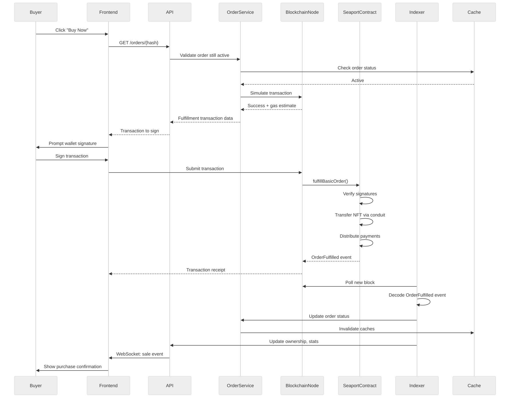
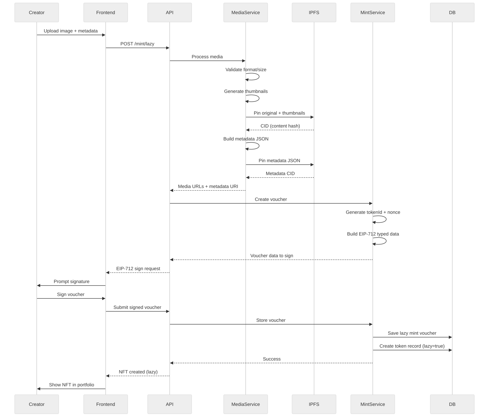
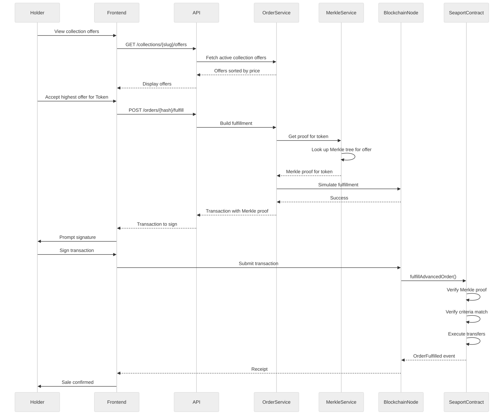
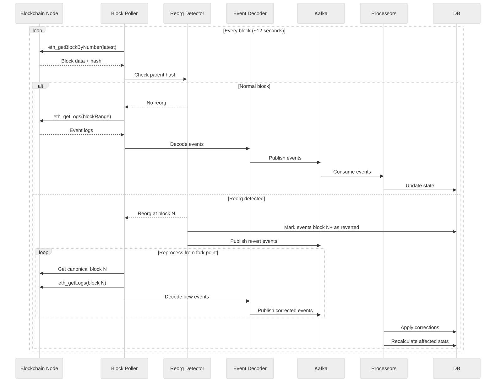
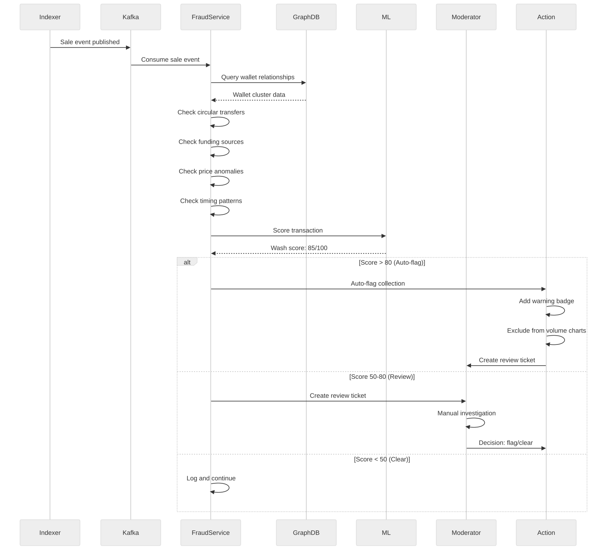

Part Context
Part: Part 5 — Real-World System Design Examples Position: Chapter 40 of 60
Table of Contents
- Overview
- Problem Framing
- Functional Requirements
- Non-Functional Requirements
- Capacity Estimation
- High-Level Design
- Subsystem 1 — NFT Minting & Smart Contracts
- Subsystem 2 — Marketplace Order Book
- Subsystem 3 — Metadata & Media Storage
- Subsystem 4 — Blockchain Indexing & Search
- Subsystem 5 — Fraud Detection & Moderation
- Data Models
- API Design
- Indexing Strategy
- Caching Strategy
- Queue Architecture
- State Machines
- Sequence Diagrams
- Concurrency Control
- Idempotency
- Consistency Model
- Saga Orchestration
- Security
- Observability
- Reliability & Fault Tolerance
- Multi-Chain Support
- Cost Analysis
- Platform Comparisons
- Edge Cases
- Architectural Decision Records
- Proof of Concepts
- Advanced Topics
- Interview Guide
- Evolution Roadmap
- Practice Questions
- References
Overview
An NFT Marketplace is a platform enabling users to create (mint), list, buy, sell, and auction non-fungible tokens. Unlike traditional e-commerce, the core transaction layer lives on-chain (Ethereum, Polygon, Solana, etc.), while the marketplace provides discovery, metadata enrichment, order matching, and user experience layers off-chain. The system must bridge Web2 user expectations (instant search, rich media, real-time feeds) with Web3 realities (block confirmation times, gas fees, chain reorganizations, wallet-based authentication).
Why This System Is Interesting for Design
| Dimension | Challenge |
|---|---|
| Hybrid on/off-chain | Orders are signed off-chain but settled on-chain |
| Eventual consistency | Block confirmations take 12+ seconds on Ethereum |
| Immutable state | Smart contract bugs cannot be patched easily |
| MEV exposure | Front-running and sandwich attacks on high-value trades |
| Multi-chain | Each chain has different finality, gas models, token standards |
| Media diversity | Images, videos, 3D models, generative art, music |
| Fraud surface | Wash trading, stolen art, fake collections, phishing |
| Financialization | Lending, fractionalization, derivatives on NFTs |
Key Players in the Ecosystem
Creators ──> Mint NFTs ──> List on Marketplace
Collectors ──> Browse/Search ──> Buy/Bid ──> Own NFTs
Aggregators (Gem/Blur) ──> Sweep across marketplaces
Indexers (Reservoir) ──> Normalize order books
Wallets (MetaMask) ──> Sign transactions
Block Explorers (Etherscan) ──> Verify on-chain state
Problem Framing
Core Problem Statement
Design a scalable NFT marketplace that allows users to mint, list, buy, sell, and auction NFTs across multiple blockchains, while providing real-time discovery, fraud protection, and a seamless user experience that abstracts blockchain complexity.
Users and Their Needs
| User Type | Primary Needs |
|---|---|
| Creator/Artist | Mint NFTs with low gas, set royalties, manage collections |
| Collector/Buyer | Discover NFTs, filter by traits/price, buy instantly or bid |
| Trader | Real-time floor prices, bulk operations, portfolio tracking |
| Aggregator | Unified order book across marketplaces, sweep functionality |
| Developer | APIs for building on top, webhooks for events |
Constraints Unique to NFT Marketplaces
- On-chain finality: Transactions are not instant; there is a confirmation window
- Gas economics: Users resist high gas fees; lazy minting defers cost to buyer
- Wallet authentication: No username/password; wallet signatures for auth
- Royalty enforcement: On-chain royalties are optional post-Blur era
- Chain reorganizations: A confirmed transaction may be reversed
- Smart contract immutability: Deployed contracts cannot be easily updated
- Decentralization expectations: Users expect censorship resistance
Functional Requirements
FR-1: NFT Minting & Collection Management
- Users can create collections (ERC-721 or ERC-1155)
- Users can mint NFTs with metadata (name, description, attributes, media)
- Support lazy minting (gasless creation, buyer pays gas on first transfer)
- Royalty configuration per collection (EIP-2981)
- Batch minting for generative collections (10,000+ items)
- Support for on-chain and off-chain metadata
FR-2: Marketplace Listings & Orders
- Fixed-price listings with expiration
- English auctions (ascending price)
- Dutch auctions (descending price)
- Collection offers (bid on any item in a collection)
- Trait offers (bid on items with specific attributes)
- Bundle listings (multiple NFTs in one sale)
- Private listings (designated buyer only)
- Offer management (create, cancel, counter)
FR-3: Discovery & Search
- Full-text search across collections and items
- Filter by chain, price range, traits, rarity, status
- Sort by price, recently listed, most favorited, ending soon
- Collection pages with floor price, volume, holder stats
- Activity feed (sales, listings, transfers, mints)
- Trending collections and top traders
FR-4: User Profiles & Social
- Wallet-based profiles with ENS/Lens integration
- Portfolio view with estimated value
- Favorites/watchlist
- Notifications (outbid, sale, price drop)
- Follow creators and collections
FR-5: Settlement & Payments
- Native token payments (ETH, MATIC, SOL)
- ERC-20 token payments (WETH, USDC, APE)
- Credit card payments via fiat on-ramp
- Royalty distribution on secondary sales
- Platform fee collection (2.5% typical)
- Gas estimation and optimization
FR-6: Analytics & Reporting
- Collection analytics (floor, volume, holders)
- Rarity scoring and ranking
- Price history charts
- Whale tracking
- Wash trading detection
Non-Functional Requirements
| Requirement | Target | Rationale |
|---|---|---|
| Latency (search) | < 200ms p95 | Traders need fast discovery |
| Latency (listing) | < 500ms p95 | Off-chain signature is instant |
| Indexing lag | < 3 blocks behind chain head | Near real-time state |
| Availability | 99.9% uptime | Trading is 24/7 |
| Throughput | 10,000 API req/sec | Peak during popular drops |
| Media serving | < 100ms p95 globally | Fast image/video loading |
| Data freshness | Floor price within 30 seconds | Traders rely on accuracy |
| Multi-chain | 5+ chains supported | Ethereum, Polygon, Arbitrum, Optimism, Base |
| Security | Zero smart contract exploits | Funds at risk |
| Compliance | OFAC screening, DMCA process | Regulatory requirements |
Capacity Estimation
Assumptions
| Metric | Value |
|---|---|
| Total NFT collections indexed | 500,000 |
| Total NFTs indexed | 200,000,000 |
| Daily active users | 500,000 |
| Daily listings created | 1,000,000 |
| Daily sales | 100,000 |
| Daily search queries | 50,000,000 |
| Avg metadata size per NFT | 2 KB |
| Avg media size per NFT | 5 MB |
| Blockchain events per day | 10,000,000 |
Storage Estimates
| Store | Calculation | Size |
|---|---|---|
| NFT metadata (PostgreSQL) | 200M x 2 KB | 400 GB |
| Order book (PostgreSQL) | 50M active orders x 1 KB | 50 GB |
| Media files (S3/IPFS) | 200M x 5 MB | 1 PB |
| Search index (Elasticsearch) | 200M docs x 3 KB | 600 GB |
| Event history | 10M/day x 365 x 0.5 KB | 1.8 TB/year |
| Redis cache | Hot collections + prices | 100 GB |
| Blockchain raw data | Full nodes | 2 TB per chain |
Throughput Estimates
| Component | Calculation | QPS |
|---|---|---|
| Search API | 50M / 86,400 | ~580 QPS avg, ~5,000 peak |
| Listing API | 1M / 86,400 | ~12 QPS avg, ~500 peak |
| Event ingestion | 10M / 86,400 | ~116 events/sec |
| Media CDN | 10M views / 86,400 | ~116 req/sec avg |
| WebSocket connections | 100K concurrent | 100K connections |
Bandwidth
| Flow | Calculation | Bandwidth |
|---|---|---|
| API responses | 5,000 req/s x 5 KB | 25 MB/s |
| Media serving | 116 req/s x 500 KB (thumbnails) | 58 MB/s |
| WebSocket updates | 100K x 100 bytes/sec | 10 MB/s |
| Blockchain node sync | Per chain | 1-10 MB/s |
High-Level Design
System Architecture Diagram

Component Responsibilities
| Component | Responsibility |
|---|---|
| API Gateway | Authentication (wallet sig verification), rate limiting, routing |
| Minting Service | Collection deployment, NFT creation, lazy minting voucher management |
| Order Book Service | Listing CRUD, offer matching, auction management, fee calculation |
| Search Service | Elasticsearch queries, faceted search, autocomplete, trending |
| Blockchain Indexer | Parse on-chain events, update off-chain state, handle reorgs |
| Media Service | Upload, resize, transcode, pin to IPFS, CDN invalidation |
| Fraud Detection | Wash trading detection, stolen NFT registry, fake collection flagging |
| Notification Service | Email, push, in-app alerts for outbids, sales, price changes |
| Analytics Service | Floor price, volume, holder distribution, rarity calculations |
| Transaction Relay | Meta-transactions, gas abstraction, bundle submissions |
Subsystem 1 — NFT Minting & Smart Contracts
ERC-721 vs ERC-1155
| Feature | ERC-721 | ERC-1155 |
|---|---|---|
| Token type | One unique token per ID | Multiple tokens per ID (editions) |
| Gas efficiency | Higher gas per mint | Lower gas via batch operations |
| Use case | 1/1 art, PFPs | Gaming items, music editions |
| Transfer | transferFrom(from, to, tokenId) |
safeTransferFrom(from, to, id, amount, data) |
| Approval | Per-token or operator | Operator only |
| Metadata | tokenURI(tokenId) |
uri(id) |
Smart Contract Architecture

Lazy Minting Deep Dive
Lazy minting allows creators to list NFTs without paying gas upfront. The NFT is "created" only when someone buys it.
How It Works:
- Creator uploads metadata and signs a minting voucher off-chain
- Voucher contains:
tokenId,tokenURI,minPrice,royaltyBPS,creator,signature - Marketplace displays the NFT as if it exists
- When a buyer purchases, the smart contract: a. Verifies the voucher signature b. Mints the NFT to the creator c. Transfers it to the buyer d. Collects payment and distributes royalties
Solidity Implementation:
// SPDX-License-Identifier: MIT
pragma solidity ^0.8.20;
import "@openzeppelin/contracts/token/ERC721/ERC721.sol";
import "@openzeppelin/contracts/token/ERC721/extensions/ERC721URIStorage.sol";
import "@openzeppelin/contracts/token/common/ERC2981.sol";
import "@openzeppelin/contracts/utils/cryptography/EIP712.sol";
import "@openzeppelin/contracts/utils/cryptography/ECDSA.sol";
import "@openzeppelin/contracts/access/Ownable.sol";
contract LazyMintNFT is ERC721, ERC721URIStorage, ERC2981, EIP712, Ownable {
using ECDSA for bytes32;
struct MintVoucher {
uint256 tokenId;
string tokenURI;
uint256 minPrice;
uint96 royaltyBPS;
address creator;
uint256 nonce;
uint256 expiration;
}
bytes32 private constant VOUCHER_TYPEHASH = keccak256(
"MintVoucher(uint256 tokenId,string tokenURI,uint256 minPrice,"
"uint96 royaltyBPS,address creator,uint256 nonce,uint256 expiration)"
);
mapping(uint256 => bool) private _usedNonces;
mapping(uint256 => bool) private _mintedTokens;
uint256 public platformFeeBPS = 250; // 2.5%
address public feeRecipient;
event LazyMinted(
uint256 indexed tokenId,
address indexed creator,
address indexed buyer,
uint256 price
);
constructor(
string memory name,
string memory symbol,
address _feeRecipient
) ERC721(name, symbol) EIP712(name, "1") Ownable(msg.sender) {
feeRecipient = _feeRecipient;
}
function redeemVoucher(
MintVoucher calldata voucher,
bytes calldata signature
) external payable {
require(!_mintedTokens[voucher.tokenId], "Already minted");
require(!_usedNonces[voucher.nonce], "Nonce used");
require(block.timestamp <= voucher.expiration, "Voucher expired");
require(msg.value >= voucher.minPrice, "Insufficient payment");
// Verify signature
bytes32 structHash = keccak256(abi.encode(
VOUCHER_TYPEHASH,
voucher.tokenId,
keccak256(bytes(voucher.tokenURI)),
voucher.minPrice,
voucher.royaltyBPS,
voucher.creator,
voucher.nonce,
voucher.expiration
));
bytes32 digest = _hashTypedDataV4(structHash);
address signer = digest.recover(signature);
require(signer == voucher.creator, "Invalid signature");
// Mark as used
_usedNonces[voucher.nonce] = true;
_mintedTokens[voucher.tokenId] = true;
// Mint to creator then transfer to buyer
_safeMint(voucher.creator, voucher.tokenId);
_setTokenURI(voucher.tokenId, voucher.tokenURI);
// Set royalty
_setTokenRoyalty(
voucher.tokenId,
voucher.creator,
voucher.royaltyBPS
);
// Transfer to buyer
_safeTransfer(voucher.creator, msg.sender, voucher.tokenId, "");
// Distribute payment
uint256 platformFee = (msg.value * platformFeeBPS) / 10000;
uint256 creatorPayment = msg.value - platformFee;
payable(feeRecipient).transfer(platformFee);
payable(voucher.creator).transfer(creatorPayment);
emit LazyMinted(
voucher.tokenId,
voucher.creator,
msg.sender,
msg.value
);
}
// Required overrides
function tokenURI(uint256 tokenId)
public view override(ERC721, ERC721URIStorage)
returns (string memory)
{
return super.tokenURI(tokenId);
}
function supportsInterface(bytes4 interfaceId)
public view override(ERC721, ERC721URIStorage, ERC2981)
returns (bool)
{
return super.supportsInterface(interfaceId);
}
}
Royalties: EIP-2981 and Enforcement Challenges
EIP-2981 Standard:
interface IERC2981 {
function royaltyInfo(
uint256 tokenId,
uint256 salePrice
) external view returns (
address receiver,
uint256 royaltyAmount
);
}
The Royalty Enforcement Problem:
| Approach | How It Works | Tradeoff |
|---|---|---|
| EIP-2981 (voluntary) | Contract reports royalty info; marketplace chooses to honor it | No enforcement; marketplaces can ignore |
| Operator Filter Registry | Blocklist marketplaces that don't pay royalties | Controversial; limits composability |
| On-chain enforcement | Transfer function checks royalty payment | Complex; breaks some integrations |
| 0% royalty model | Blur popularized optional royalties | Creator-unfriendly; race to bottom |
| Marketplace policy | Platform enforces via off-chain rules | Centralized; easy to circumvent via direct contract calls |
Operator Filter Registry Pattern (OpenSea):
abstract contract OperatorFilterer {
IOperatorFilterRegistry public constant REGISTRY =
IOperatorFilterRegistry(0x000000000000AAeB6D7670E522A718067333cd4E);
modifier onlyAllowedOperator(address from) {
if (from != msg.sender) {
if (!REGISTRY.isOperatorAllowed(address(this), msg.sender)) {
revert OperatorNotAllowed(msg.sender);
}
}
_;
}
modifier onlyAllowedOperatorApproval(address operator) {
if (!REGISTRY.isOperatorAllowed(address(this), operator)) {
revert OperatorNotAllowed(operator);
}
_;
}
}
Batch Minting for Generative Collections
For large generative collections (e.g., 10,000 PFPs), gas-efficient minting is critical:
contract EfficientBatchMint is ERC721A {
// ERC721A by Azuki — optimized for batch minting
// Single SSTORE for batch instead of per-token
uint256 public constant MAX_SUPPLY = 10000;
uint256 public constant MAX_BATCH = 20;
uint256 public mintPrice = 0.08 ether;
string private _baseTokenURI;
bytes32 public merkleRoot; // Allowlist
enum MintPhase { Closed, Allowlist, Public }
MintPhase public phase;
function allowlistMint(
uint256 quantity,
bytes32[] calldata proof
) external payable {
require(phase == MintPhase.Allowlist, "Not active");
require(quantity <= MAX_BATCH, "Too many");
require(totalSupply() + quantity <= MAX_SUPPLY, "Sold out");
require(msg.value >= mintPrice * quantity, "Underpaid");
bytes32 leaf = keccak256(abi.encodePacked(msg.sender));
require(
MerkleProof.verify(proof, merkleRoot, leaf),
"Not on allowlist"
);
_mint(msg.sender, quantity);
}
function publicMint(uint256 quantity) external payable {
require(phase == MintPhase.Public, "Not active");
require(quantity <= MAX_BATCH, "Too many");
require(totalSupply() + quantity <= MAX_SUPPLY, "Sold out");
require(msg.value >= mintPrice * quantity, "Underpaid");
_mint(msg.sender, quantity);
}
}
Collection Factory Pattern
contract CollectionFactory {
event CollectionCreated(
address indexed collection,
address indexed creator,
string name,
string symbol,
CollectionType collectionType
);
enum CollectionType { ERC721, ERC721A, ERC1155 }
mapping(address => address[]) public creatorCollections;
function createERC721Collection(
string memory name,
string memory symbol,
uint96 royaltyBPS,
string memory baseURI
) external returns (address) {
MarketplaceERC721 collection = new MarketplaceERC721(
name,
symbol,
msg.sender,
royaltyBPS,
baseURI
);
creatorCollections[msg.sender].push(address(collection));
emit CollectionCreated(
address(collection),
msg.sender,
name,
symbol,
CollectionType.ERC721
);
return address(collection);
}
}
Subsystem 2 — Marketplace Order Book
Seaport Protocol Internals
Seaport (by OpenSea) is the most widely adopted NFT marketplace protocol. It uses a generalized order format that supports complex trading scenarios.
Core Concepts:
| Concept | Description |
|---|---|
| Order | A signed intent to trade assets |
| Offer | What the offerer is willing to give |
| Consideration | What the offerer expects to receive |
| Fulfiller | The counterparty who fills the order |
| Zone | Optional contract that validates order execution |
| Conduit | Pre-approved contract for token transfers |
Order Structure:
struct OrderComponents {
address offerer;
address zone;
OfferItem[] offer;
ConsiderationItem[] consideration;
OrderType orderType;
uint256 startTime;
uint256 endTime;
bytes32 zoneHash;
uint256 salt;
bytes32 conduitKey;
uint256 counter;
}
struct OfferItem {
ItemType itemType; // NATIVE, ERC20, ERC721, ERC1155
address token;
uint256 identifierOrCriteria;
uint256 startAmount;
uint256 endAmount;
}
struct ConsiderationItem {
ItemType itemType;
address token;
uint256 identifierOrCriteria;
uint256 startAmount;
uint256 endAmount;
address payable recipient;
}
Order Book Architecture

Auction Mechanics
English Auction (Ascending Price):
| Phase | Description |
|---|---|
| Setup | Seller lists NFT with reserve price and duration |
| Bidding | Bidders place increasing bids; each bid extends auction if near end |
| Settlement | Highest bidder wins; seller can accept or reject if below reserve |
| Transfer | Winner pays; NFT transfers; royalties and fees distributed |
Dutch Auction (Descending Price):
| Phase | Description |
|---|---|
| Setup | Seller sets starting price, ending price, and duration |
| Price decay | Price decreases linearly (or exponentially) over time |
| Purchase | First buyer to accept current price wins |
| Settlement | Immediate settlement at accepted price |
Implementation:
// Dutch auction price calculation
function getCurrentPrice(
uint256 startPrice,
uint256 endPrice,
uint256 startTime,
uint256 endTime
) public view returns (uint256) {
if (block.timestamp <= startTime) return startPrice;
if (block.timestamp >= endTime) return endPrice;
uint256 elapsed = block.timestamp - startTime;
uint256 duration = endTime - startTime;
uint256 priceDiff = startPrice - endPrice;
return startPrice - (priceDiff * elapsed / duration);
}
Collection & Trait Offers
Collection offers allow bidding on any item in a collection without specifying a token ID:
// Seaport criteria-based order
OfferItem {
itemType: ERC20,
token: WETH_ADDRESS,
startAmount: 1 ether,
endAmount: 1 ether
}
ConsiderationItem {
itemType: ERC721_WITH_CRITERIA,
token: BAYC_ADDRESS,
identifierOrCriteria: merkleRoot, // Root of acceptable token IDs
startAmount: 1,
endAmount: 1,
recipient: bidder
}
Trait Offers:
Trait offers use a Merkle tree of token IDs matching desired traits:
- Off-chain: Query all token IDs with trait "Gold Fur"
- Build Merkle tree of those token IDs
- Include Merkle root in the order's
identifierOrCriteria - When fulfilling, provide Merkle proof that the specific token ID is in the tree
Order Priority and Matching Rules
Priority Order for Matching:
1. Highest price (for sellers) / Lowest price (for buyers)
2. Earliest creation time (FIFO for same price)
3. Longest expiration (more committed orders)
4. Lower nonce (replay protection ordering)
Matching Algorithm:
- For fixed listings: First valid buyer at listed price
- For auctions: Highest bid at auction end
- For collection offers: Any holder can accept highest offer
- For bundle orders: All items must be available
Subsystem 3 — Metadata & Media Storage
NFT Metadata Standards
ERC-721 Metadata (OpenSea Standard):
{
"name": "Bored Ape #1234",
"description": "A unique Bored Ape from the BAYC collection",
"image": "ipfs://QmXxXxXx.../1234.png",
"animation_url": "ipfs://QmYyYyYy.../1234.mp4",
"external_url": "https://boredapeyachtclub.com",
"attributes": [
{
"trait_type": "Background",
"value": "Aquamarine"
},
{
"trait_type": "Fur",
"value": "Golden Brown"
},
{
"trait_type": "Eyes",
"value": "Laser Eyes"
},
{
"display_type": "number",
"trait_type": "Generation",
"value": 1
},
{
"display_type": "boost_percentage",
"trait_type": "Power",
"value": 85
}
]
}
Storage Architecture

IPFS vs Arweave vs Centralized Storage
| Feature | IPFS | Arweave | S3/GCS |
|---|---|---|---|
| Persistence | Requires pinning; data can disappear | Permanent (200+ year endowment) | Depends on payment |
| Cost | ~$0.15/GB/month (Pinata) | ~$5/GB one-time | ~$0.023/GB/month |
| Addressing | Content-addressed (CID) | Transaction ID | URL-based |
| Latency | Variable (gateway dependent) | Variable | Low (CDN) |
| Decentralization | High (P2P network) | High (blockchain) | None (centralized) |
| Best for | Standard metadata/media | Permanent archival | Fast delivery |
Media Processing Pipeline
Upload Flow:
1. User uploads file (max 100 MB for images, 500 MB for video)
2. Validate: format (PNG, JPEG, GIF, SVG, MP4, WEBM, GLB), dimensions, no malware
3. Generate content hash (SHA-256)
4. Check for duplicate content (hash lookup)
5. Store original in S3
6. Generate thumbnails:
- 64x64 (favicon/small grid)
- 256x256 (collection grid)
- 512x512 (detail page)
- 1024x1024 (full view)
7. Convert to WebP/AVIF for modern browsers
8. If video: transcode to HLS (multiple bitrates)
9. If 3D (GLB): generate preview image + optimize mesh
10. Pin to IPFS (async)
11. Optionally upload to Arweave (creator choice)
12. Update metadata with CID/URL
13. Invalidate CDN cache for any updated content
Metadata Refresh and Dynamic NFTs
Dynamic NFTs have metadata that changes based on external conditions:
Dynamic NFT Sources:
- On-chain state (game items leveling up)
- Oracle data (weather-based art)
- Time-based (evolving art over seasons)
- Owner interaction (pet NFTs)
- Real-world events (sports outcomes)
Refresh Strategy:
- Periodic crawl: Re-fetch metadata every 24 hours
- On-demand: User triggers refresh via API
- Event-driven: Smart contract emits MetadataUpdate event (EIP-4906)
- Webhook: Creator notifies marketplace of changes
EIP-4906 (Metadata Update Extension):
interface IERC4906 {
event MetadataUpdate(uint256 _tokenId);
event BatchMetadataUpdate(uint256 _fromTokenId, uint256 _toTokenId);
}
Subsystem 4 — Blockchain Indexing & Search
Event Indexing Architecture

Key Events to Index
| Contract | Event | Indexed Data |
|---|---|---|
| ERC-721 | Transfer(from, to, tokenId) |
Ownership changes, mints (from=0), burns (to=0) |
| ERC-1155 | TransferSingle(operator, from, to, id, value) |
Single token transfers |
| ERC-1155 | TransferBatch(operator, from, to, ids, values) |
Batch transfers |
| Seaport | OrderFulfilled(orderHash, offerer, zone, recipient, offer, consideration) |
Sales, prices, fees |
| Seaport | OrderCancelled(orderHash, offerer, zone) |
Cancelled listings |
| ERC-721 | Approval(owner, approved, tokenId) |
Approval for marketplace |
| ERC-721 | ApprovalForAll(owner, operator, approved) |
Operator approvals |
| EIP-4906 | MetadataUpdate(tokenId) |
Metadata refresh triggers |
| WETH | Deposit(dst, wad) / Withdrawal(src, wad) |
WETH wrapping events |
Handling Chain Reorganizations
Reorg Detection Algorithm:
1. For each new block received:
a. Compare block.parentHash with stored hash of (block.number - 1)
b. If match: normal processing
c. If mismatch: REORG detected
2. On reorg detection:
a. Walk back to find common ancestor block
b. Mark all events from orphaned blocks as "reverted"
c. Re-process events from new canonical chain
d. Update all affected orders, balances, ownership
3. Confirmation depth:
- Ethereum: Wait 12 blocks (finalized) for high-value operations
- Polygon: Wait 128 blocks (checkpoint)
- Optimistic rollups: 7-day challenge period for withdrawals
4. State management:
- Keep events with confirmation status: pending/confirmed/finalized/reverted
- Only show "finalized" state in search results
- Show "pending" with warning badge in UI
Search Architecture
Elasticsearch Index Mapping:
{
"mappings": {
"properties": {
"token_id": { "type": "keyword" },
"contract_address": { "type": "keyword" },
"chain_id": { "type": "integer" },
"name": {
"type": "text",
"fields": {
"keyword": { "type": "keyword" },
"autocomplete": {
"type": "text",
"analyzer": "autocomplete_analyzer"
}
}
},
"description": { "type": "text" },
"collection_name": {
"type": "text",
"fields": { "keyword": { "type": "keyword" } }
},
"owner": { "type": "keyword" },
"creator": { "type": "keyword" },
"attributes": {
"type": "nested",
"properties": {
"trait_type": { "type": "keyword" },
"value": { "type": "keyword" },
"display_type": { "type": "keyword" }
}
},
"rarity_score": { "type": "float" },
"rarity_rank": { "type": "integer" },
"current_price": { "type": "scaled_float", "scaling_factor": 1e18 },
"last_sale_price": { "type": "scaled_float", "scaling_factor": 1e18 },
"floor_price": { "type": "scaled_float", "scaling_factor": 1e18 },
"listed_at": { "type": "date" },
"minted_at": { "type": "date" },
"is_listed": { "type": "boolean" },
"media_type": { "type": "keyword" },
"token_standard": { "type": "keyword" },
"traits_count": { "type": "integer" }
}
},
"settings": {
"analysis": {
"analyzer": {
"autocomplete_analyzer": {
"type": "custom",
"tokenizer": "autocomplete_tokenizer",
"filter": ["lowercase"]
}
},
"tokenizer": {
"autocomplete_tokenizer": {
"type": "edge_ngram",
"min_gram": 2,
"max_gram": 20,
"token_chars": ["letter", "digit"]
}
}
},
"number_of_shards": 10,
"number_of_replicas": 2
}
}
Rarity Scoring
Rarity Calculation Methods:
1. Statistical Rarity (simple):
rarity_score = 1 / (trait_frequency)
total_rarity = sum of all trait rarities
2. Information Content:
rarity_score = -log2(trait_frequency)
Gives more weight to rare traits
3. OpenRarity Standard:
- Uses information content
- Handles missing traits
- Normalizes across collections
- Accounts for trait count
Algorithm:
For each NFT in collection:
score = 0
for each trait_type in collection:
if NFT has trait_type:
value = NFT.trait[trait_type]
frequency = count(value) / total_supply
score += -log2(frequency)
else:
// Missing trait is also a signal
frequency = count(missing) / total_supply
score += -log2(frequency)
NFT.rarity_score = score
Ranking:
Sort all NFTs by rarity_score descending
Assign rank 1 to highest score
Floor Price Calculation
Floor Price Algorithm:
Simple Floor:
floor = MIN(price) WHERE listing.is_active = true
Weighted Floor (handles outliers):
listings = active listings sorted by price ASC
// Remove bottom 1% (potential errors)
// Take average of next 5 lowest
floor = AVG(listings[1:6])
Trait Floor:
For each trait_type + value combination:
trait_floor = MIN(price) WHERE
listing.is_active = true AND
NFT.has_trait(trait_type, value)
Real-time updates:
- New listing below floor → update immediately
- Sale at floor → recalculate from remaining listings
- Listing cancelled → recalculate if was floor listing
- Cache in Redis with 30-second TTL
Subsystem 5 — Fraud Detection & Moderation
Fraud Taxonomy
| Fraud Type | Description | Detection Strategy |
|---|---|---|
| Wash Trading | Self-dealing to inflate volume/price | Graph analysis, wallet clustering |
| Fake Collections | Copying art and creating lookalike collections | Image similarity, metadata analysis |
| Stolen NFTs | Listing NFTs from compromised wallets | Stolen asset registries, velocity checks |
| Phishing | Malicious approval/transfer transactions | Transaction simulation, domain blocklist |
| Bid Manipulation | Fake high bids to attract sellers | Bid validation, fund verification |
| Shill Bidding | Bidding on own items to raise price | Wallet relationship analysis |
| Rug Pulls | Abandoning project after mint | Project analysis, social signals |
| Copyright Infringement | Using copyrighted art without permission | DMCA process, image fingerprinting |
| Airdrop Scams | Sending malicious NFTs that trigger phishing | Contract analysis, blocklisting |
Wash Trading Detection

Wash Trading Signals:
Signal 1: Circular Transfers
A → B → C → A with the same token
Score: +30 if cycle detected within 7 days
Signal 2: Common Funding Source
Wallets A, B, C all funded from same EOA/exchange deposit
Score: +25 if shared funding within 30 days of trades
Signal 3: Price Manipulation
Sale price > 3x floor price with no organic demand
Score: +20 if price anomaly detected
Signal 4: Timing Patterns
Multiple trades at regular intervals (bot-like)
Score: +15 if >5 trades with <60 second intervals
Signal 5: Low Holder Diversity
Collection has many sales but few unique holders
Score: +10 if holder_count / sale_count < 0.3
Signal 6: New Wallet Activity
Wallets < 7 days old engaging in high-value trades
Score: +15 if wallet age < 7 days and trade > 1 ETH
Composite Score:
wash_score = weighted_sum(signals)
if wash_score > 80: auto_flag
if wash_score > 50: review_queue
if wash_score > 30: add_warning_badge
Stolen NFT Detection
Detection Methods:
1. Stolen Asset Registry Integration:
- Chainabuse.com reports
- Community-reported stolen wallets
- Real-time blocklist updates
2. Velocity-Based Detection:
- Wallet compromise often leads to rapid listing of all NFTs
- Alert if wallet lists >20 NFTs within 1 hour (unusual behavior)
- Cross-reference with approval transactions
3. Phishing Detection:
- Monitor for setApprovalForAll to known malicious contracts
- Track mass transfers from single wallet to unknown addresses
- Check if transfer was preceded by interaction with known phishing site
4. Recovery Process:
a. Victim reports theft via support + police report
b. Platform freezes listings from affected wallet
c. Investigation validates claim (on-chain evidence)
d. If confirmed: block transfers on platform, notify current holders
e. Cannot reverse on-chain ownership (platform limitation)
DMCA and Copyright Process
DMCA Takedown Process:
1. Copyright holder submits takedown notice:
- Identification of copyrighted work
- Identification of infringing NFT/collection
- Statement of good faith
- Signature
2. Platform reviews within 48 hours:
- Verify complainant's identity
- Compare original vs NFT artwork
- Check if fair use / transformative
3. If valid:
- Delist NFT/collection from marketplace
- Notify creator of takedown
- Creator can file counter-notice within 14 days
4. Counter-notice:
- Creator claims non-infringement
- Platform restores listing after 14 days
- Unless copyright holder files lawsuit
5. Automated detection:
- Perceptual hashing of uploaded images
- Compare against known copyrighted works database
- Flag for review if similarity > 90%
Content Moderation Pipeline
Upload → Content Analysis → Decision → Action
Content Analysis:
1. Image Classification (ML model):
- NSFW detection (explicit content)
- Violence detection
- Hate symbol detection
2. Text Analysis:
- Name/description profanity filter
- Hate speech detection
- Spam/scam keyword detection
3. Copyright Check:
- Perceptual hash comparison
- Reverse image search
- Brand/logo detection
4. Smart Contract Analysis:
- Known malicious bytecode patterns
- Honeypot detection (can't sell after buying)
- Hidden mint functions
- Excessive fees
Decision Matrix:
| Content Type | Auto Action | Review |
|-------------|-------------|---------|
| NSFW explicit | Block | No |
| Violence | Flag | Yes |
| Copyright match > 95% | Block | Yes |
| Copyright match 80-95% | Flag | Yes |
| Malicious contract | Block | No |
| Spam keywords | Flag | Yes |
Data Models
PostgreSQL Schema
-- ===========================================
-- CHAIN & NETWORK
-- ===========================================
CREATE TABLE chains (
chain_id INTEGER PRIMARY KEY,
name VARCHAR(50) NOT NULL,
rpc_url TEXT NOT NULL,
ws_url TEXT,
explorer_url TEXT,
native_token VARCHAR(10) NOT NULL,
block_time_ms INTEGER NOT NULL,
finality_blocks INTEGER NOT NULL,
is_active BOOLEAN DEFAULT true,
created_at TIMESTAMPTZ DEFAULT NOW()
);
-- ===========================================
-- COLLECTIONS
-- ===========================================
CREATE TABLE collections (
id UUID PRIMARY KEY DEFAULT gen_random_uuid(),
contract_address VARCHAR(42) NOT NULL,
chain_id INTEGER REFERENCES chains(chain_id),
name VARCHAR(255) NOT NULL,
slug VARCHAR(255) UNIQUE NOT NULL,
description TEXT,
image_url TEXT,
banner_url TEXT,
external_url TEXT,
creator_address VARCHAR(42) NOT NULL,
token_standard VARCHAR(20) NOT NULL CHECK (token_standard IN ('ERC721', 'ERC1155', 'ERC721A')),
total_supply INTEGER,
royalty_bps INTEGER DEFAULT 0 CHECK (royalty_bps BETWEEN 0 AND 10000),
royalty_recipient VARCHAR(42),
is_verified BOOLEAN DEFAULT false,
is_flagged BOOLEAN DEFAULT false,
flag_reason TEXT,
deploy_tx_hash VARCHAR(66),
deployed_at TIMESTAMPTZ,
created_at TIMESTAMPTZ DEFAULT NOW(),
updated_at TIMESTAMPTZ DEFAULT NOW(),
UNIQUE(contract_address, chain_id)
);
CREATE INDEX idx_collections_creator ON collections(creator_address);
CREATE INDEX idx_collections_chain ON collections(chain_id);
CREATE INDEX idx_collections_slug ON collections(slug);
CREATE INDEX idx_collections_verified ON collections(is_verified) WHERE is_verified = true;
-- ===========================================
-- COLLECTION STATS (materialized, updated periodically)
-- ===========================================
CREATE TABLE collection_stats (
collection_id UUID PRIMARY KEY REFERENCES collections(id),
floor_price NUMERIC(78, 0), -- wei
floor_price_token VARCHAR(42),
volume_24h NUMERIC(78, 0),
volume_7d NUMERIC(78, 0),
volume_30d NUMERIC(78, 0),
volume_all NUMERIC(78, 0),
sales_24h INTEGER DEFAULT 0,
sales_7d INTEGER DEFAULT 0,
listed_count INTEGER DEFAULT 0,
holder_count INTEGER DEFAULT 0,
unique_holders_pct NUMERIC(5, 2),
avg_price_24h NUMERIC(78, 0),
price_change_24h NUMERIC(10, 4),
price_change_7d NUMERIC(10, 4),
highest_sale NUMERIC(78, 0),
updated_at TIMESTAMPTZ DEFAULT NOW()
);
-- ===========================================
-- TOKENS (NFTs)
-- ===========================================
CREATE TABLE tokens (
id UUID PRIMARY KEY DEFAULT gen_random_uuid(),
collection_id UUID REFERENCES collections(id),
token_id NUMERIC(78, 0) NOT NULL,
chain_id INTEGER REFERENCES chains(chain_id),
contract_address VARCHAR(42) NOT NULL,
owner_address VARCHAR(42) NOT NULL,
name VARCHAR(255),
description TEXT,
image_url TEXT,
image_thumbnail_url TEXT,
animation_url TEXT,
metadata_url TEXT,
metadata_json JSONB,
rarity_score NUMERIC(20, 10),
rarity_rank INTEGER,
is_flagged BOOLEAN DEFAULT false,
is_nsfw BOOLEAN DEFAULT false,
is_lazy_minted BOOLEAN DEFAULT false,
mint_tx_hash VARCHAR(66),
minted_at TIMESTAMPTZ,
last_transfer_at TIMESTAMPTZ,
created_at TIMESTAMPTZ DEFAULT NOW(),
updated_at TIMESTAMPTZ DEFAULT NOW(),
UNIQUE(contract_address, token_id, chain_id)
);
CREATE INDEX idx_tokens_collection ON tokens(collection_id);
CREATE INDEX idx_tokens_owner ON tokens(owner_address);
CREATE INDEX idx_tokens_rarity ON tokens(collection_id, rarity_rank);
CREATE INDEX idx_tokens_contract_token ON tokens(contract_address, token_id);
-- ===========================================
-- TOKEN ATTRIBUTES (traits)
-- ===========================================
CREATE TABLE token_attributes (
id UUID PRIMARY KEY DEFAULT gen_random_uuid(),
token_id UUID REFERENCES tokens(id),
collection_id UUID REFERENCES collections(id),
trait_type VARCHAR(255) NOT NULL,
trait_value VARCHAR(255) NOT NULL,
display_type VARCHAR(50),
frequency NUMERIC(10, 8), -- percentage of collection
created_at TIMESTAMPTZ DEFAULT NOW()
);
CREATE INDEX idx_attrs_token ON token_attributes(token_id);
CREATE INDEX idx_attrs_collection_trait ON token_attributes(collection_id, trait_type, trait_value);
-- ===========================================
-- ORDERS (Listings, Offers, Bids)
-- ===========================================
CREATE TYPE order_side AS ENUM ('listing', 'offer');
CREATE TYPE order_type AS ENUM ('fixed', 'english_auction', 'dutch_auction', 'collection_offer', 'trait_offer');
CREATE TYPE order_status AS ENUM ('active', 'filled', 'cancelled', 'expired', 'inactive');
CREATE TABLE orders (
id UUID PRIMARY KEY DEFAULT gen_random_uuid(),
order_hash VARCHAR(66) UNIQUE NOT NULL,
chain_id INTEGER REFERENCES chains(chain_id),
protocol VARCHAR(50) NOT NULL DEFAULT 'seaport',
protocol_version VARCHAR(10) NOT NULL DEFAULT '1.5',
side order_side NOT NULL,
order_type order_type NOT NULL,
status order_status NOT NULL DEFAULT 'active',
maker_address VARCHAR(42) NOT NULL,
taker_address VARCHAR(42), -- null for open orders
collection_id UUID REFERENCES collections(id),
token_id UUID REFERENCES tokens(id), -- null for collection offers
contract_address VARCHAR(42) NOT NULL,
token_identifier NUMERIC(78, 0), -- null for collection offers
quantity INTEGER NOT NULL DEFAULT 1,
payment_token VARCHAR(42) NOT NULL,
price NUMERIC(78, 0) NOT NULL, -- in wei
start_price NUMERIC(78, 0), -- for dutch auctions
end_price NUMERIC(78, 0), -- for dutch auctions
platform_fee_bps INTEGER DEFAULT 250,
royalty_fee_bps INTEGER DEFAULT 0,
signature TEXT NOT NULL,
raw_order JSONB NOT NULL,
criteria JSONB, -- for collection/trait offers
zone_address VARCHAR(42),
conduit_key VARCHAR(66),
salt NUMERIC(78, 0),
counter INTEGER NOT NULL DEFAULT 0,
nonce NUMERIC(78, 0),
start_time TIMESTAMPTZ NOT NULL,
end_time TIMESTAMPTZ NOT NULL,
filled_at TIMESTAMPTZ,
cancelled_at TIMESTAMPTZ,
fill_tx_hash VARCHAR(66),
cancel_tx_hash VARCHAR(66),
source VARCHAR(100) DEFAULT 'marketplace',
created_at TIMESTAMPTZ DEFAULT NOW(),
updated_at TIMESTAMPTZ DEFAULT NOW()
);
CREATE INDEX idx_orders_collection_active ON orders(collection_id, status) WHERE status = 'active';
CREATE INDEX idx_orders_token ON orders(token_id, side, status);
CREATE INDEX idx_orders_maker ON orders(maker_address, status);
CREATE INDEX idx_orders_price ON orders(collection_id, price) WHERE status = 'active' AND side = 'listing';
CREATE INDEX idx_orders_expiry ON orders(end_time) WHERE status = 'active';
CREATE INDEX idx_orders_hash ON orders(order_hash);
-- ===========================================
-- AUCTION BIDS
-- ===========================================
CREATE TABLE auction_bids (
id UUID PRIMARY KEY DEFAULT gen_random_uuid(),
order_id UUID REFERENCES orders(id),
bidder_address VARCHAR(42) NOT NULL,
bid_amount NUMERIC(78, 0) NOT NULL,
payment_token VARCHAR(42) NOT NULL,
signature TEXT NOT NULL,
is_winning BOOLEAN DEFAULT false,
created_at TIMESTAMPTZ DEFAULT NOW()
);
CREATE INDEX idx_bids_order ON auction_bids(order_id, bid_amount DESC);
-- ===========================================
-- EVENTS / ACTIVITY
-- ===========================================
CREATE TYPE event_type AS ENUM (
'mint', 'transfer', 'sale', 'listing', 'offer',
'bid', 'cancel_listing', 'cancel_offer',
'approval', 'metadata_update'
);
CREATE TABLE events (
id UUID PRIMARY KEY DEFAULT gen_random_uuid(),
event_type event_type NOT NULL,
chain_id INTEGER REFERENCES chains(chain_id),
collection_id UUID REFERENCES collections(id),
token_id UUID REFERENCES tokens(id),
contract_address VARCHAR(42) NOT NULL,
token_identifier NUMERIC(78, 0),
from_address VARCHAR(42),
to_address VARCHAR(42),
price NUMERIC(78, 0),
payment_token VARCHAR(42),
quantity INTEGER DEFAULT 1,
tx_hash VARCHAR(66) NOT NULL,
block_number BIGINT NOT NULL,
block_timestamp TIMESTAMPTZ NOT NULL,
log_index INTEGER,
is_confirmed BOOLEAN DEFAULT false,
is_reverted BOOLEAN DEFAULT false,
marketplace VARCHAR(100),
created_at TIMESTAMPTZ DEFAULT NOW()
);
CREATE INDEX idx_events_collection ON events(collection_id, event_type, block_timestamp DESC);
CREATE INDEX idx_events_token ON events(token_id, event_type, block_timestamp DESC);
CREATE INDEX idx_events_address ON events(from_address, event_type, block_timestamp DESC);
CREATE INDEX idx_events_block ON events(chain_id, block_number);
CREATE INDEX idx_events_tx ON events(tx_hash);
-- ===========================================
-- USERS / PROFILES
-- ===========================================
CREATE TABLE users (
id UUID PRIMARY KEY DEFAULT gen_random_uuid(),
wallet_address VARCHAR(42) UNIQUE NOT NULL,
username VARCHAR(50) UNIQUE,
display_name VARCHAR(100),
bio TEXT,
avatar_url TEXT,
banner_url TEXT,
ens_name VARCHAR(255),
twitter_handle VARCHAR(50),
website_url TEXT,
is_verified BOOLEAN DEFAULT false,
is_banned BOOLEAN DEFAULT false,
ban_reason TEXT,
nonce VARCHAR(66) NOT NULL, -- for wallet auth
last_login_at TIMESTAMPTZ,
created_at TIMESTAMPTZ DEFAULT NOW(),
updated_at TIMESTAMPTZ DEFAULT NOW()
);
CREATE INDEX idx_users_wallet ON users(wallet_address);
CREATE INDEX idx_users_ens ON users(ens_name) WHERE ens_name IS NOT NULL;
-- ===========================================
-- FAVORITES / WATCHLIST
-- ===========================================
CREATE TABLE favorites (
id UUID PRIMARY KEY DEFAULT gen_random_uuid(),
user_id UUID REFERENCES users(id),
token_id UUID REFERENCES tokens(id),
collection_id UUID REFERENCES collections(id),
created_at TIMESTAMPTZ DEFAULT NOW(),
UNIQUE(user_id, token_id)
);
-- ===========================================
-- NOTIFICATIONS
-- ===========================================
CREATE TYPE notification_type AS ENUM (
'outbid', 'sale', 'offer_received', 'offer_accepted',
'price_drop', 'auction_ending', 'item_sold',
'transfer_received', 'collection_offer'
);
CREATE TABLE notifications (
id UUID PRIMARY KEY DEFAULT gen_random_uuid(),
user_id UUID REFERENCES users(id),
notification_type notification_type NOT NULL,
title VARCHAR(255) NOT NULL,
message TEXT,
data JSONB,
is_read BOOLEAN DEFAULT false,
created_at TIMESTAMPTZ DEFAULT NOW()
);
CREATE INDEX idx_notifications_user ON notifications(user_id, is_read, created_at DESC);
-- ===========================================
-- LAZY MINT VOUCHERS
-- ===========================================
CREATE TABLE lazy_mint_vouchers (
id UUID PRIMARY KEY DEFAULT gen_random_uuid(),
collection_id UUID REFERENCES collections(id),
token_identifier NUMERIC(78, 0) NOT NULL,
creator_address VARCHAR(42) NOT NULL,
metadata_url TEXT NOT NULL,
min_price NUMERIC(78, 0) NOT NULL,
royalty_bps INTEGER DEFAULT 0,
signature TEXT NOT NULL,
nonce NUMERIC(78, 0) NOT NULL,
expiration TIMESTAMPTZ NOT NULL,
is_redeemed BOOLEAN DEFAULT false,
redeemed_tx_hash VARCHAR(66),
created_at TIMESTAMPTZ DEFAULT NOW()
);
-- ===========================================
-- FRAUD / MODERATION
-- ===========================================
CREATE TYPE moderation_status AS ENUM ('pending', 'approved', 'rejected', 'under_review');
CREATE TYPE report_reason AS ENUM (
'copyright', 'stolen', 'fake_collection', 'spam',
'nsfw', 'wash_trading', 'phishing', 'other'
);
CREATE TABLE moderation_reports (
id UUID PRIMARY KEY DEFAULT gen_random_uuid(),
reporter_id UUID REFERENCES users(id),
collection_id UUID REFERENCES collections(id),
token_id UUID REFERENCES tokens(id),
reason report_reason NOT NULL,
description TEXT,
evidence_urls TEXT[],
status moderation_status DEFAULT 'pending',
reviewer_id UUID,
resolution TEXT,
created_at TIMESTAMPTZ DEFAULT NOW(),
resolved_at TIMESTAMPTZ
);
CREATE TABLE wash_trading_scores (
id UUID PRIMARY KEY DEFAULT gen_random_uuid(),
collection_id UUID REFERENCES collections(id),
event_id UUID REFERENCES events(id),
from_address VARCHAR(42) NOT NULL,
to_address VARCHAR(42) NOT NULL,
score INTEGER NOT NULL CHECK (score BETWEEN 0 AND 100),
signals JSONB NOT NULL,
is_flagged BOOLEAN DEFAULT false,
created_at TIMESTAMPTZ DEFAULT NOW()
);
-- ===========================================
-- INDEXER STATE
-- ===========================================
CREATE TABLE indexer_state (
chain_id INTEGER REFERENCES chains(chain_id),
last_indexed_block BIGINT NOT NULL,
last_finalized_block BIGINT NOT NULL,
last_indexed_at TIMESTAMPTZ DEFAULT NOW(),
is_syncing BOOLEAN DEFAULT false,
PRIMARY KEY (chain_id)
);
-- ===========================================
-- PRICE HISTORY (TimescaleDB hypertable)
-- ===========================================
CREATE TABLE price_history (
time TIMESTAMPTZ NOT NULL,
collection_id UUID NOT NULL,
chain_id INTEGER NOT NULL,
floor_price NUMERIC(78, 0),
avg_price NUMERIC(78, 0),
volume NUMERIC(78, 0),
sales_count INTEGER,
listed_count INTEGER,
holder_count INTEGER
);
-- Convert to TimescaleDB hypertable
SELECT create_hypertable('price_history', 'time');
CREATE INDEX idx_price_history_collection ON price_history(collection_id, time DESC);
Solidity Data Structures (On-Chain)
// Marketplace Contract — Key Structures
// Order status tracking
mapping(bytes32 => OrderStatus) public orderStatus;
enum OrderStatus {
OPEN,
FILLED,
CANCELLED
}
// Nonce management for order cancellation
mapping(address => uint256) public nonces;
// Conduit approvals
mapping(bytes32 => address) public conduits;
// Zone validation
mapping(address => bool) public approvedZones;
// Fee configuration
struct FeeConfig {
address recipient;
uint256 basisPoints;
}
FeeConfig public platformFee;
// Collection royalty override
mapping(address => FeeConfig) public royaltyOverrides;
API Design
REST API Endpoints
BASE URL: https://api.marketplace.com/v2
=== Authentication ===
POST /auth/nonce # Get nonce for wallet signature
POST /auth/verify # Verify signature, get JWT
POST /auth/refresh # Refresh JWT token
=== Collections ===
GET /collections # List collections (paginated, filtered)
GET /collections/:slug # Get collection details
GET /collections/:slug/stats # Get collection stats
GET /collections/:slug/activity # Get collection activity feed
GET /collections/:slug/tokens # List tokens in collection
GET /collections/:slug/attributes # Get trait distribution
GET /collections/:slug/offers # Get collection offers
POST /collections # Create new collection
PUT /collections/:slug # Update collection metadata
=== Tokens ===
GET /tokens/:chain/:contract/:tokenId # Get token details
GET /tokens/:chain/:contract/:tokenId/offers # Get offers on token
GET /tokens/:chain/:contract/:tokenId/history # Price/transfer history
GET /tokens/:chain/:contract/:tokenId/similar # Similar items
POST /tokens/refresh-metadata # Trigger metadata refresh
=== Orders ===
GET /orders # Query orders
GET /orders/:orderHash # Get order details
POST /orders # Submit new order (listing/offer)
POST /orders/:orderHash/fulfill # Build fulfillment transaction
DELETE /orders/:orderHash # Cancel order (requires signature)
POST /orders/bulk # Submit multiple orders
POST /orders/validate # Validate order without submitting
=== Search ===
GET /search # Full-text search
GET /search/autocomplete # Autocomplete suggestions
GET /search/trending # Trending collections
GET /search/top-traders # Top traders leaderboard
=== Users ===
GET /users/:address # Get user profile
PUT /users/:address # Update profile
GET /users/:address/tokens # User's NFT portfolio
GET /users/:address/activity # User activity
GET /users/:address/offers-made # Offers made by user
GET /users/:address/offers-received # Offers received
GET /users/:address/favorites # User's favorites
=== Minting ===
POST /mint/lazy # Create lazy mint voucher
POST /mint/deploy-collection # Deploy new contract
GET /mint/estimate-gas # Gas estimation
=== Analytics ===
GET /analytics/collections/:slug/chart # Price chart data
GET /analytics/market-overview # Market-wide stats
GET /analytics/whale-tracker # Large transactions
GET /analytics/wash-trading/:slug # Wash trading analysis
=== Notifications ===
GET /notifications # User's notifications
PUT /notifications/:id/read # Mark as read
PUT /notifications/settings # Notification preferences
=== Reports ===
POST /reports # Submit fraud/copyright report
Smart Contract ABI (Key Functions)
[
{
"name": "fulfillBasicOrder",
"type": "function",
"inputs": [
{
"name": "parameters",
"type": "tuple",
"components": [
{"name": "considerationToken", "type": "address"},
{"name": "considerationIdentifier", "type": "uint256"},
{"name": "considerationAmount", "type": "uint256"},
{"name": "offerer", "type": "address"},
{"name": "zone", "type": "address"},
{"name": "offerToken", "type": "address"},
{"name": "offerIdentifier", "type": "uint256"},
{"name": "offerAmount", "type": "uint256"},
{"name": "basicOrderType", "type": "uint8"},
{"name": "startTime", "type": "uint256"},
{"name": "endTime", "type": "uint256"},
{"name": "zoneHash", "type": "bytes32"},
{"name": "salt", "type": "uint256"},
{"name": "offererConduitKey", "type": "bytes32"},
{"name": "fulfillerConduitKey", "type": "bytes32"},
{"name": "totalOriginalAdditionalRecipients", "type": "uint256"},
{"name": "additionalRecipients", "type": "tuple[]"},
{"name": "signature", "type": "bytes"}
]
}
],
"outputs": [{"name": "fulfilled", "type": "bool"}]
},
{
"name": "fulfillOrder",
"type": "function",
"inputs": [
{"name": "order", "type": "tuple"},
{"name": "fulfillerConduitKey", "type": "bytes32"}
],
"outputs": [{"name": "fulfilled", "type": "bool"}]
},
{
"name": "matchOrders",
"type": "function",
"inputs": [
{"name": "orders", "type": "tuple[]"},
{"name": "fulfillments", "type": "tuple[]"}
],
"outputs": [{"name": "executions", "type": "tuple[]"}]
},
{
"name": "cancel",
"type": "function",
"inputs": [
{"name": "orders", "type": "tuple[]"}
],
"outputs": [{"name": "cancelled", "type": "bool"}]
},
{
"name": "incrementCounter",
"type": "function",
"inputs": [],
"outputs": [{"name": "newCounter", "type": "uint256"}]
},
{
"name": "getOrderStatus",
"type": "function",
"inputs": [{"name": "orderHash", "type": "bytes32"}],
"outputs": [
{"name": "isValidated", "type": "bool"},
{"name": "isCancelled", "type": "bool"},
{"name": "totalFilled", "type": "uint256"},
{"name": "totalSize", "type": "uint256"}
]
}
]
WebSocket API
WebSocket URL: wss://stream.marketplace.com/v2
=== Subscribe ===
{
"type": "subscribe",
"channels": [
{
"name": "collection_activity",
"params": { "slug": "boredapeyachtclub" }
},
{
"name": "token_events",
"params": {
"contract": "0xBC4CA0EdA7647A8aB7C2061c2E118A18a936f13D",
"token_id": "1234"
}
},
{
"name": "floor_price",
"params": { "slugs": ["bayc", "cryptopunks", "azuki"] }
},
{
"name": "user_notifications",
"params": { "address": "0x..." }
}
]
}
=== Event Messages ===
{
"channel": "collection_activity",
"event": "sale",
"data": {
"collection_slug": "boredapeyachtclub",
"token_id": "1234",
"price": "85000000000000000000",
"payment_token": "ETH",
"from": "0xABC...",
"to": "0xDEF...",
"tx_hash": "0x123...",
"timestamp": "2026-03-24T10:30:00Z"
}
}
{
"channel": "floor_price",
"event": "update",
"data": {
"collection_slug": "boredapeyachtclub",
"floor_price": "83500000000000000000",
"change_pct": -1.77,
"timestamp": "2026-03-24T10:30:05Z"
}
}
GraphQL Schema (Excerpt)
type Query {
collection(slug: String!): Collection
token(contract: String!, tokenId: String!, chainId: Int!): Token
orders(
collectionSlug: String
tokenId: String
side: OrderSide
status: OrderStatus
first: Int
after: String
): OrderConnection!
searchTokens(
query: String
filters: TokenFilterInput
sort: TokenSortInput
first: Int
after: String
): TokenConnection!
}
type Collection {
id: ID!
name: String!
slug: String!
contractAddress: String!
chainId: Int!
totalSupply: Int
stats: CollectionStats!
tokens(first: Int, after: String, filters: TokenFilterInput): TokenConnection!
attributes: [TraitDistribution!]!
activity(first: Int, eventTypes: [EventType!]): EventConnection!
offers: [Order!]!
}
type Token {
id: ID!
tokenId: String!
name: String
description: String
imageUrl: String
animationUrl: String
owner: User!
collection: Collection!
attributes: [TokenAttribute!]!
rarityScore: Float
rarityRank: Int
listings: [Order!]!
offers: [Order!]!
priceHistory: [PricePoint!]!
transferHistory: [Event!]!
}
type Order {
id: ID!
orderHash: String!
side: OrderSide!
orderType: OrderType!
status: OrderStatus!
maker: User!
price: BigInt!
paymentToken: Token!
startTime: DateTime!
endTime: DateTime!
createdAt: DateTime!
}
input TokenFilterInput {
traits: [TraitFilterInput!]
priceMin: BigInt
priceMax: BigInt
paymentToken: String
isListed: Boolean
rarityMin: Int
rarityMax: Int
chains: [Int!]
}
Indexing Strategy
Database Indexing
-- High-priority composite indexes for common queries
-- "Show me listed items in a collection sorted by price"
CREATE INDEX idx_orders_collection_price_active
ON orders(collection_id, price ASC)
WHERE status = 'active' AND side = 'listing';
-- "Show me all active offers for a token"
CREATE INDEX idx_orders_token_offers
ON orders(token_id, price DESC)
WHERE status = 'active' AND side = 'offer';
-- "Show me my active listings"
CREATE INDEX idx_orders_maker_listings
ON orders(maker_address, created_at DESC)
WHERE status = 'active' AND side = 'listing';
-- "Show me recent sales in a collection"
CREATE INDEX idx_events_collection_sales
ON events(collection_id, block_timestamp DESC)
WHERE event_type = 'sale';
-- "Show me tokens owned by address"
CREATE INDEX idx_tokens_owner_collection
ON tokens(owner_address, collection_id);
-- "Show me tokens by rarity in a collection"
CREATE INDEX idx_tokens_rarity_listed
ON tokens(collection_id, rarity_rank ASC)
WHERE rarity_rank IS NOT NULL;
-- Partial index for expiring orders (cleanup job)
CREATE INDEX idx_orders_expiring
ON orders(end_time)
WHERE status = 'active' AND end_time < NOW() + INTERVAL '1 hour';
-- BRIN index for time-series events (block number is always increasing)
CREATE INDEX idx_events_block_brin ON events USING BRIN (block_number);
Elasticsearch Indexing Strategy
Index Architecture:
- nft_tokens_{chain_id} # Per-chain token index
- nft_collections # Global collection index
- nft_events_{chain_id} # Per-chain event index
Indexing Pipeline:
1. Kafka consumer reads token/event updates
2. Batch documents (100 per batch, 1 second flush)
3. Bulk index to Elasticsearch
4. Refresh interval: 5 seconds (near real-time)
Shard Strategy:
- nft_tokens_1 (Ethereum): 10 shards x 2 replicas (largest)
- nft_tokens_137 (Polygon): 5 shards x 2 replicas
- nft_collections: 3 shards x 2 replicas
- nft_events_*: Time-based ILM (hot/warm/cold)
Search Optimizations:
- field_data for aggregations on trait_type/trait_value
- doc_values for numeric sorting (price, rarity)
- _source filtering to reduce payload size
- Profile slow queries > 200ms
Caching Strategy
Cache Layers
Layer 1: CDN Cache (CloudFront)
├── NFT media (images, videos): 7 days TTL
├── Collection thumbnails: 24 hours TTL
├── Static assets: 30 days TTL
└── API responses (public): 30 seconds TTL
Layer 2: Application Cache (Redis Cluster)
├── Collection floor prices: 30 second TTL
├── Collection stats: 60 second TTL
├── Token ownership: 5 minute TTL (invalidated on transfer)
├── User profiles: 10 minute TTL
├── Order book snapshots: 30 second TTL
├── Search autocomplete: 5 minute TTL
├── Trending collections: 60 second TTL
├── Rate limiting counters: sliding window
└── Session tokens: 24 hour TTL
Layer 3: Local Cache (in-process)
├── Chain configuration: permanent until restart
├── Contract ABIs: permanent until restart
├── Frequently accessed collection metadata: 60 second TTL
└── Hot token metadata: 30 second TTL
Cache Invalidation Strategy
Event-Driven Invalidation:
1. Blockchain event ingested (e.g., Transfer)
2. Event published to Kafka
3. Cache invalidation consumer:
a. Delete token ownership cache
b. Delete collection stats cache (if floor affected)
c. Delete user portfolio cache (old and new owner)
d. Publish WebSocket update
Pattern: Write-Through for Critical Data
- Order creation: write to DB + cache simultaneously
- Floor price: update cache atomically on each listing/sale
Pattern: Cache-Aside for Read-Heavy Data
- Token metadata: check cache → miss → query DB → populate cache
- Collection attributes: check cache → miss → query ES → populate cache
Redis Data Structures:
- Floor prices: SORTED SET (collection_id → floor_price)
- Active listings: SORTED SET per collection (price → order_hash)
- User notifications: LIST (FIFO, capped at 100)
- Rate limits: STRING with INCR + EXPIRE
- Trending: SORTED SET with time-decayed scores
Queue Architecture
Kafka Topic Design
Topics:
├── blockchain.events.{chain_id} # Raw blockchain events
│ ├── Partitions: 20 per chain
│ ├── Key: contract_address
│ └── Retention: 7 days
│
├── orders.created # New order submissions
│ ├── Partitions: 10
│ ├── Key: collection_id
│ └── Retention: 3 days
│
├── orders.filled # Filled orders (sales)
│ ├── Partitions: 10
│ ├── Key: collection_id
│ └── Retention: 30 days
│
├── orders.cancelled # Cancelled orders
│ ├── Partitions: 5
│ ├── Key: order_hash
│ └── Retention: 3 days
│
├── metadata.refresh # Metadata refresh requests
│ ├── Partitions: 5
│ ├── Key: contract_address + token_id
│ └── Retention: 1 day
│
├── search.index # Search index updates
│ ├── Partitions: 10
│ ├── Key: document_id
│ └── Retention: 1 day
│
├── notifications.send # Notification dispatch
│ ├── Partitions: 5
│ ├── Key: user_id
│ └── Retention: 1 day
│
├── analytics.events # Analytics pipeline
│ ├── Partitions: 10
│ ├── Key: collection_id
│ └── Retention: 30 days
│
├── fraud.analysis # Fraud detection pipeline
│ ├── Partitions: 5
│ ├── Key: tx_hash
│ └── Retention: 7 days
│
└── cache.invalidation # Cache invalidation signals
├── Partitions: 10
├── Key: cache_key_prefix
└── Retention: 1 hour
Consumer Groups:
- indexer-service → blockchain.events.*
- order-service → orders.*
- search-indexer → search.index
- notification-service → notifications.send
- analytics-service → analytics.events
- fraud-service → fraud.analysis
- cache-invalidator → cache.invalidation
Dead Letter Queue Strategy
DLQ Topics:
- dlq.blockchain.events # Failed event processing
- dlq.orders # Failed order processing
- dlq.metadata # Failed metadata fetches
- dlq.notifications # Failed notification delivery
Retry Policy:
1st retry: 1 minute delay
2nd retry: 5 minute delay
3rd retry: 30 minute delay
4th retry: 2 hour delay
5th retry: → DLQ (manual investigation)
DLQ Processing:
- Alert on DLQ depth > 100
- Daily review of DLQ items
- Manual replay after fix
- Metrics: DLQ ingestion rate, processing lag
State Machines
Order Lifecycle State Machine

Auction State Machine

NFT Minting State Machine

Collection Deployment State Machine

Fraud Investigation State Machine

Sequence Diagrams
SD-1: NFT Purchase (Fixed Price Listing)

SD-2: Lazy Minting Flow

SD-3: Collection Offer Acceptance

SD-4: Blockchain Indexing with Reorg Handling

SD-5: Fraud Detection Pipeline

Concurrency Control
Order Fulfillment Race Conditions
Problem: Multiple buyers try to purchase the same listed NFT simultaneously.
Solution 1: On-chain atomicity
- The smart contract ensures only ONE fulfillment succeeds
- Second transaction reverts with "order already filled"
- Off-chain: optimistic UI shows "pending" then updates
Solution 2: Off-chain order locking (optional optimization)
- When buyer initiates purchase, temporarily lock order in Redis
- Lock TTL: 60 seconds (enough for transaction submission)
- If lock held: show "purchase in progress" to other buyers
- If transaction fails: release lock
- This is OPTIONAL — on-chain already handles it
Redis Lock Pattern:
key: "order_lock:{order_hash}"
value: "{buyer_address}:{timestamp}"
TTL: 60 seconds
Operation: SET NX (set if not exists)
Concurrent Listing Updates
Problem: User updates listing price while someone is buying at old price.
Solution: Nonce-based ordering
- Each order has a unique nonce from the maker
- incrementCounter() on-chain invalidates ALL orders with lower counter
- New listing uses new counter value
- Old order automatically becomes unfillable
Off-chain handling:
1. User requests price change
2. API marks old order as "cancelling"
3. User signs new order with current counter
4. New order stored with status "active"
5. Old order transitions to "cancelled" when new counter is detected on-chain
Concurrent Metadata Updates
Problem: Multiple indexer instances process metadata for the same token.
Solution: Optimistic locking with version
UPDATE tokens
SET metadata_json = $new_metadata,
updated_at = NOW(),
version = version + 1
WHERE id = $token_id
AND version = $expected_version;
If rows_affected = 0: retry with latest version
Auction Bid Concurrency
Problem: Two bids arrive simultaneously for the same auction.
Solution: PostgreSQL advisory lock + serialization
BEGIN;
-- Acquire advisory lock on auction
SELECT pg_advisory_xact_lock(hashtext(auction_id::text));
-- Check current highest bid
SELECT MAX(bid_amount) as current_high
FROM auction_bids
WHERE order_id = $auction_id AND is_winning = true;
-- Only insert if new bid is higher
IF $new_bid > current_high THEN
UPDATE auction_bids SET is_winning = false
WHERE order_id = $auction_id AND is_winning = true;
INSERT INTO auction_bids (order_id, bidder_address, bid_amount, is_winning)
VALUES ($auction_id, $bidder, $new_bid, true);
END IF;
COMMIT;
Idempotency
Blockchain Event Processing
Problem: Indexer processes the same block/event twice (restart, redelivery).
Solution: Event deduplication table
CREATE TABLE processed_events (
chain_id INTEGER,
tx_hash VARCHAR(66),
log_index INTEGER,
processed_at TIMESTAMPTZ DEFAULT NOW(),
PRIMARY KEY (chain_id, tx_hash, log_index)
);
Processing logic:
1. Receive event from Kafka
2. Check: INSERT INTO processed_events ... ON CONFLICT DO NOTHING
3. If insert succeeded (affected rows = 1): process event
4. If conflict (affected rows = 0): skip (already processed)
Order Submission Idempotency
Problem: Client retries order submission due to timeout.
Solution: Order hash as natural idempotency key
- Each order has a deterministic hash based on its components
- INSERT INTO orders ... ON CONFLICT (order_hash) DO NOTHING
- Client receives same response whether first or retry attempt
Additional: API idempotency key header
X-Idempotency-Key: {uuid}
- Server checks Redis for key
- If exists: return cached response
- If not: process request, cache response with 24h TTL
Notification Deduplication
Problem: User receives duplicate "outbid" notifications.
Solution: Composite dedup key
key = hash(user_id + notification_type + token_id + bid_amount)
Redis SET NX with 1-hour TTL
If key exists: skip notification
If key new: send notification
Consistency Model
On-Chain vs Off-Chain Consistency
The marketplace operates with EVENTUAL CONSISTENCY between on-chain
state (source of truth) and off-chain database/cache.
Consistency Tiers:
Tier 1: Strong Consistency (on-chain)
- Token ownership: always correct on-chain
- Order fill status: always correct on-chain
- Balance checks: always correct on-chain
Tier 2: Near Real-Time (< 30 seconds lag)
- Floor prices in Redis
- Active listing counts
- Collection volume stats
Tier 3: Eventually Consistent (< 5 minutes lag)
- Search index (Elasticsearch)
- Rarity rankings
- User portfolio views
- Analytics dashboards
Tier 4: Batch Consistent (hourly/daily)
- Wash trading scores
- Holder distribution charts
- Historical volume aggregations
Reconciliation Process:
- Every 5 minutes: compare DB ownership vs on-chain for hot collections
- Every hour: full reconciliation of active orders vs on-chain status
- Every 24 hours: full token ownership audit for top 100 collections
Read-Your-Writes Consistency
Problem: User creates listing but doesn't see it immediately.
Solution: Sticky reads after writes
1. After user creates order, API returns order data
2. Frontend adds order to local state immediately (optimistic)
3. Set user session flag: "recent_write_ts = NOW()"
4. For next 30 seconds, read from primary DB (not replica)
5. After 30 seconds, replica has caught up — read from replica
Alternative: Return created resource directly
- POST /orders returns the full order object
- Frontend displays it without needing a follow-up GET
Saga Orchestration
Cross-Chain NFT Bridge Saga
When users bridge NFTs between chains (e.g., Ethereum → Polygon):
Step 1: Lock NFT on Source Chain
→ Transaction: transferFrom(user, bridge_contract, tokenId)
→ Compensating: transferFrom(bridge_contract, user, tokenId)
Step 2: Wait for Finality on Source Chain
→ Wait for 12 block confirmations
→ Compensating: unlock on source if message fails
Step 3: Submit Proof to Destination Chain
→ Transaction: bridge.claimNFT(proof, tokenId, metadata)
→ Compensating: burn on destination, unlock on source
Step 4: Update Off-Chain State
→ Update token chain_id, contract_address in DB
→ Update search index
→ Invalidate caches
→ Compensating: revert DB updates
Saga Orchestrator:
- State persisted in PostgreSQL
- Timeout per step: 30 minutes
- Max retries per step: 3
- Alert if saga stuck > 1 hour
Auction Settlement Saga
Step 1: Verify Auction Ended
→ Check: block.timestamp > auction.endTime
→ Check: highestBid >= reservePrice
Step 2: Execute On-Chain Settlement
→ Call: seaport.fulfillOrder(auctionOrder, winningBid)
→ Compensating: refund winning bidder
Step 3: Distribute Payments
→ Royalties to creator
→ Platform fee to marketplace
→ Remaining to seller
→ Compensating: reverse all transfers
Step 4: Refund Losing Bidders
→ Release WETH holds for all non-winning bids
→ Compensating: N/A (idempotent)
Step 5: Update Off-Chain State
→ Mark auction as settled
→ Update token ownership
→ Send notifications
→ Compensating: mark as settlement-failed
Collection Mint Saga (Large Drop)
For a 10,000 item collection mint:
Step 1: Deploy Contract
→ Deploy collection contract with factory
→ Compensating: N/A (contract deployed is permanent)
Step 2: Upload Media Batch
→ Upload all 10,000 images to IPFS
→ Pin to multiple providers
→ Compensating: unpin from providers
Step 3: Upload Metadata Batch
→ Generate metadata JSONs with IPFS image CIDs
→ Upload to IPFS
→ Compensating: unpin metadata
Step 4: Set Base URI
→ Call contract.setBaseURI(ipfs://metadata_folder/)
→ Compensating: N/A
Step 5: Configure Mint Phases
→ Set allowlist Merkle root
→ Set mint price + max per wallet
→ Open allowlist mint → public mint
→ Compensating: close mint
Step 6: Index Collection
→ Indexer discovers contract events
→ Fetch and store all metadata
→ Calculate rarity scores
→ Compensating: remove from index
Saga timeout: 24 hours (large uploads)
Security
Smart Contract Security
Threat Model:
1. Reentrancy attacks on payment distribution
2. Integer overflow in price calculations
3. Signature replay across chains
4. Flash loan attacks on auction pricing
5. Front-running of rare NFT listings
6. Malicious token contracts (honeypots)
Mitigations:
- Use OpenZeppelin libraries (battle-tested)
- Checks-Effects-Interactions pattern
- ReentrancyGuard on all state-changing functions
- Chain ID in EIP-712 domain separator (prevents cross-chain replay)
- Pull-over-push payment pattern
- Formal verification for core marketplace logic
- Multi-sig upgradability (UUPS proxy with timelock)
- Bug bounty program (Immunefi)
- Continuous audit (Trail of Bits, OpenZeppelin)
Wallet Authentication (SIWE)
Sign-In With Ethereum (EIP-4361):
1. Client requests nonce: GET /auth/nonce
Response: { nonce: "abc123", expirationTime: "..." }
2. Client constructs SIWE message:
"marketplace.com wants you to sign in with your Ethereum account:
0x1234...5678
Sign in to NFT Marketplace
URI: https://marketplace.com
Version: 1
Chain ID: 1
Nonce: abc123
Issued At: 2026-03-24T10:00:00Z
Expiration Time: 2026-03-24T10:10:00Z"
3. User signs message with wallet
4. Client sends: POST /auth/verify
Body: { message: "...", signature: "0x..." }
5. Server verifies:
a. Recover signer from signature
b. Check signer matches address in message
c. Check nonce matches (prevent replay)
d. Check expiration
e. Issue JWT with 24h TTL
6. Subsequent requests include: Authorization: Bearer {jwt}
MEV Protection for NFT Trading
MEV (Maximal Extractable Value) Risks:
1. Front-running: Bot sees pending "buy" tx, buys first at listed price, resells higher
2. Sandwich: Bot manipulates floor price around a large buy
3. Sniping: Bot outbids at auction last second via private mempool
Protections:
1. Private transaction submission (Flashbots Protect)
- Submit tx directly to block builder, bypass public mempool
- No front-running possible
2. Commit-reveal scheme for auctions
- Phase 1: Submit hash(bid + salt) — nobody sees actual bid
- Phase 2: Reveal bid + salt — verify against commitment
- Prevents last-second sniping
3. Anti-snipe extension
- Any bid in last 5 minutes extends auction by 5 minutes
- Prevents last-block sniping
4. Private listings
- Designated buyer only (taker_address set)
- Cannot be intercepted
5. Off-chain order books with on-chain settlement
- Orders are not visible in mempool until fulfillment
- Reduces front-running window
API Security
Rate Limiting:
- Anonymous: 20 requests/minute
- Authenticated: 120 requests/minute
- API key (developers): 600 requests/minute
- Burst: 2x sustained for 10 seconds
Input Validation:
- All addresses: checksum validation (EIP-55)
- Token IDs: uint256 range validation
- Prices: positive, within reasonable bounds
- Signatures: length and format validation
- Metadata: sanitize HTML, limit field lengths
CORS Policy:
- Allowed origins: marketplace.com, *.marketplace.com
- Credentials: true (for JWT cookies)
- Methods: GET, POST, PUT, DELETE
- Headers: Authorization, Content-Type, X-Idempotency-Key
Content Security:
- SVG sanitization (prevent XSS via malicious SVGs)
- Media type validation (magic bytes, not just extension)
- Metadata JSON schema validation
- URL allowlisting for external links
Observability
Metrics (Prometheus)
Business Metrics:
- nft_sales_total{chain, collection, payment_token}
- nft_volume_eth{chain, collection, period}
- nft_listings_active{chain, collection}
- nft_floor_price{chain, collection}
- nft_unique_traders{period}
- nft_mint_count{chain, collection}
Technical Metrics:
- api_request_duration_seconds{endpoint, method, status}
- api_request_total{endpoint, method, status}
- blockchain_indexer_lag_blocks{chain}
- blockchain_indexer_events_processed_total{chain, event_type}
- blockchain_reorg_detected_total{chain, depth}
- order_validation_duration_seconds{result}
- search_query_duration_seconds{index, query_type}
- cache_hit_ratio{cache_layer, key_prefix}
- kafka_consumer_lag{topic, consumer_group}
- websocket_connections_active
- media_upload_duration_seconds{format, size_bucket}
- ipfs_pin_duration_seconds{provider}
- fraud_score_distribution{bucket}
Infrastructure:
- postgresql_connections_active{database}
- elasticsearch_cluster_health
- redis_memory_used_bytes{instance}
- kafka_broker_messages_in_per_sec
Distributed Tracing
Trace Context Flow:
User Request → API Gateway (trace_id created)
→ Order Service (span: validate_order)
→ Redis (span: check_cache)
→ PostgreSQL (span: query_orders)
→ Blockchain Node (span: simulate_tx)
→ Search Service (span: query_es)
→ Elasticsearch (span: search_query)
→ Response
Key Traces:
1. Purchase flow: Frontend → API → Order → Blockchain → Indexer → Cache
2. Search flow: Frontend → API → Search → ES → Response
3. Indexing flow: Node → Poller → Decoder → Kafka → Processors → DB/ES
4. Media flow: Upload → Validate → Process → IPFS → CDN
Sampling:
- 100% for errors
- 100% for slow requests (> 1 second)
- 10% for normal requests
- 1% for health checks
Alerting Rules
groups:
- name: marketplace_alerts
rules:
- alert: IndexerLagCritical
expr: blockchain_indexer_lag_blocks > 50
for: 5m
labels:
severity: critical
annotations:
summary: "Blockchain indexer is {{ $value }} blocks behind"
- alert: HighOrderFailureRate
expr: rate(order_validation_total{result="failed"}[5m]) / rate(order_validation_total[5m]) > 0.1
for: 10m
labels:
severity: warning
annotations:
summary: "Order failure rate above 10%"
- alert: FloorPriceStale
expr: time() - nft_floor_price_updated_timestamp > 120
for: 5m
labels:
severity: warning
annotations:
summary: "Floor price not updated for > 2 minutes"
- alert: SmartContractAnomaly
expr: rate(blockchain_events_total{event_type="unexpected"}[1h]) > 0
for: 1m
labels:
severity: critical
annotations:
summary: "Unexpected smart contract events detected"
- alert: WashTradingSpike
expr: rate(fraud_flags_total{type="wash_trading"}[1h]) > 50
for: 30m
labels:
severity: warning
annotations:
summary: "Wash trading detection spike"
- alert: SearchLatencyHigh
expr: histogram_quantile(0.95, search_query_duration_seconds) > 0.5
for: 10m
labels:
severity: warning
annotations:
summary: "p95 search latency above 500ms"
Dashboards
Dashboard 1: Market Overview
- Total volume (24h, 7d, 30d) by chain
- Active listings count
- Unique traders today
- Top collections by volume
- Floor price trends for top 10 collections
Dashboard 2: Indexer Health
- Blocks behind per chain
- Events processed per minute
- Reorg events detected
- Processing latency histogram
- DLQ depth per topic
Dashboard 3: API Performance
- Request rate by endpoint
- p50/p95/p99 latency
- Error rate by status code
- Cache hit ratio
- WebSocket connection count
Dashboard 4: Fraud & Moderation
- Wash trading flags per day
- Collections flagged vs cleared
- DMCA reports open/resolved
- Fraud score distribution
- Top flagged wallets
Reliability & Fault Tolerance
Blockchain Node Redundancy
Strategy: Multi-provider fallback with health checks
Primary: Self-hosted Erigon node
Secondary: Alchemy API
Tertiary: Infura API
Quaternary: QuickNode API
Health Check (every 10 seconds):
1. eth_blockNumber — is node synced?
2. eth_getLogs for known recent block — returning data?
3. Compare block number across providers — consistent?
Failover Logic:
if primary.blockNumber < secondary.blockNumber - 3:
switch to secondary
alert: "Primary node behind by N blocks"
if all_providers.blockNumber diverge by > 5:
alert: "Potential chain issues — manual investigation"
Data Recovery
PostgreSQL:
- Streaming replication to 2 standby nodes
- WAL archiving to S3 every minute
- Point-in-time recovery capability
- Daily full backup + continuous WAL
Elasticsearch:
- 2 replicas per shard
- Daily snapshot to S3
- Recovery: restore from snapshot + replay from Kafka
Redis:
- Redis Cluster with 3 masters, 3 replicas
- RDB snapshots every 15 minutes
- AOF for point-in-time recovery
- If total loss: warm cache from DB (degraded but functional)
Kafka:
- Replication factor: 3
- Min in-sync replicas: 2
- Log retention: 7 days (enough to replay on full rebuild)
Graceful Degradation
Scenario: Elasticsearch is down
- Search falls back to PostgreSQL full-text search (slower)
- Autocomplete disabled
- Faceted filtering limited to indexed columns
- Alert: search degraded mode
Scenario: Blockchain node is behind
- Show "data may be delayed" banner
- Disable "Buy Now" for unconfirmed state
- Continue serving cached data
- Switch to backup provider
Scenario: IPFS gateway is slow
- Serve media from S3/CDN (always cached)
- Show "IPFS gateway slow" for direct IPFS links
- Media display unaffected for cached content
Scenario: Kafka is down
- Order creation still works (write to DB directly)
- Indexing pauses (will catch up when restored)
- Notifications delayed
- Cache invalidation delayed (stale data possible)
Circuit Breaker Configuration
Blockchain RPC calls:
- Threshold: 50% failure rate in 30 seconds
- Open duration: 60 seconds
- Half-open: allow 5 test requests
- Fallback: switch to backup provider
Elasticsearch queries:
- Threshold: 30% failure rate in 60 seconds
- Open duration: 30 seconds
- Fallback: PostgreSQL full-text search
IPFS pinning:
- Threshold: 70% failure rate in 5 minutes
- Open duration: 5 minutes
- Fallback: store in S3, pin later (async retry)
External APIs (ENS, Etherscan):
- Threshold: 50% failure in 60 seconds
- Open duration: 120 seconds
- Fallback: serve without enrichment (no ENS names)
Multi-Chain Support
Chain Abstraction Layer
Interface:
ChainAdapter {
getBlock(number): Block
getLogs(filter): Log[]
getTokenURI(contract, tokenId): string
getOwner(contract, tokenId): address
getBalance(address, token): BigInt
simulateTransaction(tx): SimResult
submitTransaction(tx): TxHash
getFinality(): number // blocks to finality
getGasPrice(): GasPrice
getNativeToken(): string
getBlockTime(): number // milliseconds
}
Implementations:
EthereumAdapter implements ChainAdapter
PolygonAdapter implements ChainAdapter
ArbitrumAdapter implements ChainAdapter
OptimismAdapter implements ChainAdapter
BaseAdapter implements ChainAdapter
SolanaAdapter implements ChainAdapter // different paradigm
Chain Configuration Table:
| Chain | ID | Finality | Block Time | Gas Model | Token Standard |
|-------|----|----------|------------|-----------|----------------|
| Ethereum | 1 | 12 blocks | 12s | EIP-1559 | ERC-721/1155 |
| Polygon | 137 | 128 blocks | 2s | EIP-1559 | ERC-721/1155 |
| Arbitrum | 42161 | 1 block* | ~0.3s | Arbitrum gas | ERC-721/1155 |
| Optimism | 10 | 1 block* | 2s | EIP-1559 | ERC-721/1155 |
| Base | 8453 | 1 block* | 2s | EIP-1559 | ERC-721/1155 |
| Solana | - | 32 slots | 0.4s | Compute units | Metaplex |
* L2 finality depends on L1 settlement (7 days for optimistic, ~15 min for ZK)
Cross-Chain Order Considerations
Challenge: User wants to buy an Ethereum NFT but has funds on Polygon.
Approach 1: Bridge and Buy
1. Bridge funds from Polygon to Ethereum
2. Wait for bridge finality
3. Buy NFT on Ethereum
4. Slow (7+ days for optimistic bridge)
Approach 2: Cross-Chain Swap
1. Use cross-chain DEX aggregator (e.g., Socket, LiFi)
2. Atomic swap: Polygon MATIC → Ethereum ETH
3. Buy NFT in same transaction bundle
4. Faster but higher fees
Approach 3: Chain-Agnostic Order Book
1. List NFT with "accepts payment on Polygon"
2. Seller receives payment on Polygon
3. NFT transfers on Ethereum
4. Requires trusted relayer or escrow contract on both chains
Current Industry Standard: Most platforms require same-chain payment.
Cost Analysis
Infrastructure Costs (Monthly)
| Component | Specification | Monthly Cost |
|---|---|---|
| Blockchain nodes (5 chains) | c5.4xlarge x 5, 2TB NVMe | $5,000 |
| PostgreSQL (Aurora) | db.r6g.2xlarge, Multi-AZ | $3,000 |
| Elasticsearch | 3x r6g.2xlarge (data) + 2x c6g.xlarge (master) | $4,500 |
| Redis Cluster | 3x r6g.xlarge | $1,500 |
| Kafka (MSK) | 3x kafka.m5.2xlarge | $2,500 |
| TimescaleDB | r6g.xlarge | $800 |
| Application servers | 10x c6g.xlarge (auto-scaling) | $3,000 |
| S3 media storage | 1 PB | $23,000 |
| CloudFront CDN | 100 TB/month transfer | $8,500 |
| IPFS pinning (Pinata) | 5 TB | $750 |
| Alchemy/Infura (backup) | Growth tier x 5 chains | $2,000 |
| Load balancers | 2x ALB | $500 |
| WAF | Standard rules | $300 |
| Monitoring (Datadog) | 20 hosts + APM | $2,000 |
| Total | ~$57,350 |
Revenue Model
Revenue Streams:
1. Platform fee: 2.5% on each sale (primary revenue)
2. Lazy minting fee: $0 (subsidized to attract creators)
3. Featured listings: $500-$5,000/week
4. API access: Free tier + paid tiers ($99-$999/month)
5. Pro tools subscription: $29/month
Revenue Estimation:
- Daily volume: $10M in sales
- Platform fee: 2.5% = $250K/day = $7.5M/month
- API subscriptions: ~$50K/month
- Featured listings: ~$100K/month
- Total: ~$7.65M/month
Profit margin: ~$7.65M - $57K = ~$7.59M/month (infrastructure is tiny vs revenue)
Note: The real cost is in engineering talent, legal, customer support, and
business development, not infrastructure.
Platform Comparisons
OpenSea vs Blur vs Rarible vs Magic Eden vs Foundation
| Feature | OpenSea | Blur | Rarible | Magic Eden | Foundation |
|---|---|---|---|---|---|
| Primary Chain | Ethereum, Polygon, + 10 | Ethereum, Blast | Ethereum, Polygon, + 5 | Solana, Ethereum, Bitcoin | Ethereum |
| Protocol | Seaport | Blur Pool | Rarible Protocol | Custom | Custom |
| Platform Fee | 2.5% | 0% (token incentives) | 1% | 2% | 5% |
| Royalty Policy | Optional (min 0.5%) | Optional | Enforced | Optional | Enforced |
| Lazy Minting | Yes | No | Yes | Yes | Yes |
| Auction Types | English, Dutch | No | English, Dutch | English | Reserve |
| Collection Offers | Yes | Yes (core feature) | Yes | Yes | No |
| Trait Offers | Yes | Yes (core feature) | Limited | Yes | No |
| Pro Trading Tools | Basic | Advanced (charts, portfolio) | Basic | Medium | Minimal |
| Aggregation | No (single marketplace) | Yes (aggregates others) | Yes | Yes | No |
| Token | No | $BLUR | $RARI | No | No |
| Target Users | General | Traders/Flippers | Creators | Solana/Bitcoin community | Artists (1/1s) |
| API | REST + GraphQL | REST | REST + GraphQL | REST | REST |
| Indexer | Proprietary | Proprietary | Open (Rarible Protocol) | Proprietary | Proprietary |
| NFT Lending | No | Yes (Blend) | No | No | No |
Architectural Differences
OpenSea:
- Seaport protocol (open-source, widely adopted)
- Centralized off-chain order book
- Wyvern protocol (legacy, deprecated)
- Strongest brand recognition
- Largest indexed collection count
Blur:
- Blur Pool for instant liquidity
- Aggregator model (cross-marketplace)
- Point system for incentivizing listings/bids
- Blend protocol for NFT lending
- Optimized for speed (instant loading, real-time feeds)
- Professional trading interface
Rarible:
- Rarible Protocol: open indexer + order book
- Multi-chain with consistent UX
- Community governance via RARI token
- Creator-friendly tools
- B2B licensing of protocol
Magic Eden:
- Started Solana-first (Metaplex standard)
- Added Ethereum, Bitcoin (Ordinals)
- Cross-chain NFT experience
- Launchpad for new collections
- Creator studio
Foundation:
- Invite-only/curated approach (historically)
- Focus on 1/1 art and small editions
- Reserve price auctions
- Artist-first design
- Higher fees but perceived quality
Edge Cases
Edge Case 1: Chain Reorganization During Sale
Scenario: User buys NFT, transaction is confirmed, but a reorg reverts the block.
Impact: User sees "purchased" but doesn't actually own the NFT.
Handling:
1. Show "pending confirmation" for 12 blocks (Ethereum)
2. If reorg detected: revert off-chain state
3. Notify user: "Transaction was reverted due to chain reorganization"
4. Relist the NFT automatically
5. Log reorg event for analytics
Edge Case 2: Metadata Points to Dead IPFS Link
Scenario: NFT metadata URI points to IPFS hash that no one pins anymore.
Impact: "Image not found" on marketplace.
Handling:
1. Marketplace pins all indexed metadata to own IPFS nodes
2. Fallback to cached S3 copy of media
3. Show placeholder image if all sources fail
4. Periodic health check of metadata URIs
5. Alert collection owners of broken metadata
Edge Case 3: Creator Rugpulls by Changing Metadata
Scenario: Creator changes baseURI to point to blank images after selling out.
Impact: All NFTs in collection lose their artwork.
Handling:
1. Detect baseURI change event on-chain
2. Compare old vs new metadata
3. If significant degradation: flag collection
4. Preserve old metadata in marketplace cache
5. Show "metadata changed" warning to holders
6. Option: serve cached pre-change metadata
Edge Case 4: Flash Loan Attack on Auction
Scenario: Attacker takes flash loan, bids absurdly high on auction,
wins auction in same transaction block, then defaulting.
Handling:
1. Auction bids require WETH deposit (pre-funded, not flash-loaned)
2. Bid validation checks balance at bid time AND fill time
3. Commit-reveal scheme prevents same-block bid+fill
4. Time delay between bid placement and auction end
Edge Case 5: NFT Transferred While Listed
Scenario: User lists on marketplace then transfers NFT directly via contract.
Impact: "phantom listing" — appears listed but can't be bought.
Handling:
1. Indexer detects Transfer event
2. Check if token has active listings
3. Mark listings as "inactive" (owner changed)
4. Remove from active listings index
5. Periodic scan: verify all active listings have correct owner
Edge Case 6: Same NFT Listed on Multiple Marketplaces
Scenario: User lists NFT on OpenSea AND Blur simultaneously.
Impact: First buyer gets it; second buyer's transaction reverts.
Handling:
1. Aggregator shows listings from all marketplaces
2. When fulfilling, simulate transaction first
3. If simulation fails: "This NFT may have been sold elsewhere"
4. Cross-marketplace order invalidation via indexer
5. Real-time WebSocket updates across marketplace events
Edge Case 7: ERC-1155 Partial Fills
Scenario: User lists 100 copies of an ERC-1155 token. Buyer wants 30.
Impact: Partial fill of an order.
Handling:
1. Seaport supports partial fills natively
2. Order tracks: totalFilled / totalSize
3. Remaining quantity stays active
4. Update listing display: "70 remaining"
5. Multiple partial fills until fully filled
Edge Case 8: Gas Spike During Mint
Scenario: Popular mint causes gas to spike 10x. Users' transactions stuck.
Impact: Stuck transactions, failed mints, frustrated users.
Handling:
1. Show real-time gas estimate before transaction
2. Suggest gas limit with 20% buffer
3. Speed-up option: replace transaction with higher gas
4. Queue-based minting with gas abstraction
5. Alternative: lazy mint with gasless experience
Edge Case 9: Soulbound Token Listed for Sale
Scenario: User tries to list a soulbound (non-transferable) token.
Impact: Transaction would revert on transfer.
Handling:
1. Detect soulbound nature during listing creation
2. Simulate transfer — if reverts, reject listing
3. Flag soulbound tokens in metadata
4. Show "non-transferable" badge
5. Block listing creation for known soulbound contracts
Edge Case 10: Circular Royalty Payments
Scenario: Creator sets royalty recipient to a contract that calls back
into the marketplace, creating a reentrancy loop.
Impact: Transaction failure or exploit.
Handling:
1. Seaport uses ReentrancyGuard
2. Royalty payments use pull pattern (claim) not push (send)
3. Gas limit on royalty payment calls
4. Blocklist known malicious royalty recipient contracts
Edge Case 11: Token ID Collision Across Chains
Scenario: Same contract address + token ID exists on Ethereum and Polygon.
Impact: Ambiguity in which NFT is being referenced.
Handling:
1. Always include chain_id in all identifiers
2. Composite key: (chain_id, contract_address, token_id)
3. URLs include chain: /ethereum/0xABC.../1234
4. API requires chain_id parameter
5. Different indexing per chain (separate ES indices)
Edge Case 12: Whale Wallet Dumps Collection Floor
Scenario: A whale lists 500 NFTs at 50% below floor, crashing the collection.
Impact: Panic selling, massive price drop.
Handling:
1. Detect unusual listing volume (>20 items in 1 hour by single wallet)
2. Show "whale alert" notification to watchers
3. Volume-weighted floor calculation (ignore outliers)
4. Activity feed shows whale movement prominently
5. Do NOT prevent listings (censorship resistance)
6. Provide analytics for informed decisions
Architectural Decision Records
ADR-1: Off-Chain Order Book vs Fully On-Chain
| Aspect | Decision |
|---|---|
| Status | Accepted |
| Context | Should marketplace orders live on-chain or off-chain? |
| Decision | Off-chain order book with on-chain settlement (Seaport model) |
| Rationale | On-chain order books have prohibitive gas costs for listing, cancellation, and price updates. Off-chain orders are free to create, modify, and cancel. On-chain settlement ensures trustless execution. |
| Consequences | + Zero cost for listing/cancelling; + Faster UX; - Centralized order book (single point of failure); - Orders can be censored by marketplace |
| Alternatives | Fully on-chain (Zora), hybrid AMM (Sudoswap) |
ADR-2: Seaport vs Custom Protocol
| Aspect | Decision |
|---|---|
| Status | Accepted |
| Context | Build custom marketplace contract or adopt Seaport? |
| Decision | Adopt Seaport with custom Zone contracts for validation |
| Rationale | Seaport is battle-tested with $30B+ in volume, audited by multiple firms, widely adopted, and supports all order types we need. Custom zones allow marketplace-specific rules without modifying core protocol. |
| Consequences | + Proven security; + Aggregator compatibility; + Community support; - Less control over protocol evolution; - Complexity of Seaport internals |
| Alternatives | Custom protocol (more control, higher risk), LooksRare protocol, X2Y2 protocol |
ADR-3: PostgreSQL + Elasticsearch vs Single Store
| Aspect | Decision |
|---|---|
| Status | Accepted |
| Context | Should we use a single database or separate OLTP and search? |
| Decision | PostgreSQL for canonical state + Elasticsearch for search + TimescaleDB for time-series |
| Rationale | PostgreSQL excels at ACID transactions and relational queries. Elasticsearch excels at full-text search, faceted filtering, and aggregations. TimescaleDB optimized for time-series price data. Each handles its workload optimally. |
| Consequences | + Best performance per workload; + Independent scaling; - Data synchronization complexity; - Eventual consistency between stores |
| Alternatives | MongoDB (flexible but weaker consistency), SingleStore (unified but expensive), CockroachDB (distributed SQL) |
ADR-4: IPFS + CDN Hybrid for Media
| Aspect | Decision |
|---|---|
| Status | Accepted |
| Context | How to store and serve NFT media files? |
| Decision | IPFS for content-addressing and decentralization, S3+CloudFront for fast delivery |
| Rationale | Users expect fast media loading (<100ms). IPFS gateways are slow and unreliable. S3+CDN provides reliable, fast delivery. IPFS provides content-addressing and meets decentralization expectations. |
| Consequences | + Fast media delivery; + Content-addressable; + Fallback options; - Dual storage cost; - Sync complexity |
| Alternatives | IPFS-only (slow), S3-only (centralized), Arweave-only (expensive, permanent) |
ADR-5: Kafka vs RabbitMQ for Event Streaming
| Aspect | Decision |
|---|---|
| Status | Accepted |
| Context | What message broker for blockchain event streaming? |
| Decision | Apache Kafka |
| Rationale | Blockchain events must be processed in order per contract. Kafka's partitioned log with key-based ordering ensures this. Kafka's replay capability is essential for re-indexing. High throughput handles 10M+ events/day. |
| Consequences | + Ordered processing; + Replay capability; + High throughput; - Operational complexity; - Higher resource usage |
| Alternatives | RabbitMQ (simpler but no replay), Amazon SQS (managed but no ordering guarantees at scale), Pulsar |
ADR-6: Lazy Minting as Default
| Aspect | Decision |
|---|---|
| Status | Accepted |
| Context | Should minting require gas upfront from creators? |
| Decision | Default to lazy minting; allow eager minting as option |
| Rationale | Lazy minting removes the #1 barrier for creators (gas cost). The NFT exists off-chain until purchased, at which point the buyer's gas covers minting. This dramatically increases creator onboarding. |
| Consequences | + Zero cost for creators; + Higher creator adoption; - NFT doesn't exist on-chain until first sale; - Slightly higher gas for first buyer; - Voucher management complexity |
| Alternatives | Gas subsidies (expensive for platform), L2-only minting (limits to L2 ecosystem) |
ADR-7: Multi-Chain from Day One vs Gradual
| Aspect | Decision |
|---|---|
| Status | Accepted |
| Context | Support multiple chains at launch or start with Ethereum only? |
| Decision | Launch with Ethereum and Polygon, add chains incrementally via chain adapter pattern |
| Rationale | Chain abstraction layer allows adding new chains without modifying core services. Starting with 2 chains validates the abstraction. Each new chain requires: node setup, adapter implementation, contract deployment, indexer configuration. |
| Consequences | + Validated abstraction early; + Faster time-to-market; - Initial investment in abstraction; - Each chain has unique edge cases |
| Alternatives | Ethereum-only (simpler but limited market), all chains at once (too risky) |
Proof of Concepts
POC-1: Seaport Order Integration
Goal: Validate end-to-end order creation, storage, and fulfillment.
Steps:
1. Deploy Seaport to local Hardhat network
2. Implement EIP-712 signing for order creation
3. Store signed order in PostgreSQL
4. Build fulfillment transaction
5. Execute on-chain and verify transfer
Success Criteria:
- Order created and stored in < 500ms
- Fulfillment simulation succeeds
- On-chain settlement transfers NFT and distributes payment
- Event indexer captures OrderFulfilled
- Off-chain state matches on-chain
Timeline: 1 week
Team: 1 smart contract dev + 1 backend dev
POC-2: Real-Time Floor Price Tracking
Goal: Validate floor price accuracy within 30 seconds of on-chain change.
Steps:
1. Set up Ethereum node WebSocket subscription
2. Listen for OrderFulfilled and Transfer events
3. Update floor price in Redis on each event
4. Compare with manual calculation every 5 minutes
5. Measure latency from on-chain event to Redis update
Success Criteria:
- Floor price accurate within 30 seconds of listing/sale
- Handles 100+ events/second during popular mint
- Floor calculation handles edge cases (outliers, cancelled orders)
- Redis cache hit rate > 99% for floor price queries
Timeline: 3 days
Team: 1 backend dev
POC-3: Wash Trading Detection
Goal: Validate wash trading detection accuracy on historical data.
Steps:
1. Export 6 months of sale events for top 100 collections
2. Build wallet clustering based on funding sources
3. Implement circular transfer detection
4. Implement price anomaly detection
5. Score each transaction
6. Compare against manually labeled dataset (1000 trades)
Success Criteria:
- Precision > 85% (flagged trades are actually wash trades)
- Recall > 70% (catch most wash trades)
- False positive rate < 10%
- Processing latency < 5 seconds per trade
Timeline: 2 weeks
Team: 1 data engineer + 1 ML engineer
POC-4: Multi-Chain Indexer
Goal: Validate chain abstraction layer with Ethereum and Polygon.
Steps:
1. Implement ChainAdapter interface for Ethereum and Polygon
2. Deploy identical NFT contract on both chains
3. Mint, transfer, and sell NFTs on both chains
4. Verify indexer captures all events on both chains
5. Search across chains with single query
Success Criteria:
- Same codebase indexes both chains
- Adding a new chain requires only adapter implementation
- Cross-chain search returns results from all chains
- Reorg handling works on both chains (different finality)
Timeline: 1 week
Team: 1 backend dev
Advanced Topics
NFT Financialization
1. NFT Lending (Blur's Blend Protocol):
- Borrower uses NFT as collateral
- Lender provides ETH loan
- If borrower defaults: lender gets NFT
- Perpetual loan model (no fixed term)
- Refinancing: new lender can offer better rate
2. Fractionalization:
- Lock NFT in vault contract
- Issue ERC-20 tokens representing shares
- Trade fractions on DEXes
- Buyout mechanism: collect all fractions to unlock NFT
- Regulatory concerns: may be securities
3. NFT Derivatives:
- Floor price perpetual futures
- Options on specific NFTs
- Collection index tokens
- Requires reliable oracle for floor prices
4. Rental / Delegation:
- ERC-4907 rental standard
- Delegate.cash for non-custodial delegation
- Gaming items rented to players
- Revenue sharing from rented NFTs
Soulbound Tokens (SBTs)
Definition: Non-transferable tokens bound to a wallet address.
Use Cases:
- Proof of attendance (POAPs, but non-transferable)
- Credentials and certifications
- Reputation scores
- Membership tokens
- Identity verification
ERC-5192: Minimal Soulbound Interface:
interface IERC5192 {
event Locked(uint256 tokenId);
event Unlocked(uint256 tokenId);
function locked(uint256 tokenId) external view returns (bool);
}
Marketplace Implications:
- Cannot be listed for sale
- Cannot be transferred
- Still indexed for portfolio display
- No marketplace fees (no sales)
- Used for gating/verification features
Dynamic NFTs
Types of Dynamic NFTs:
1. On-chain dynamic: Metadata generated by smart contract
- Example: Loot (text generated on-chain)
- Always current, no refresh needed
2. Oracle-driven: External data feeds update metadata
- Example: Weather-based art
- Chainlink oracle provides data
- Contract updates tokenURI based on oracle
3. Time-based: Metadata changes with time
- Example: Aging art, seasonal themes
- tokenURI includes time-based logic
4. Interactive: Owner actions change metadata
- Example: Virtual pets, upgradeable game items
- State stored on-chain, metadata reflects state
Marketplace Challenges:
- Metadata may change between listing and purchase
- Rarity scores may shift dynamically
- Historical metadata should be preserved
- Refresh triggers needed for accurate display
MEV in NFT Trading
Types of MEV in NFT Markets:
1. Front-running Listings:
- Bot monitors mempool for underpriced listings
- Submits buy transaction with higher gas
- Gets included before intended buyer
- Mitigation: Flashbots Protect, private mempools
2. Sandwich Attacks:
- Bot buys before and sells after a large purchase
- Extracts value from price impact
- Less common in NFTs (unique items) than DeFi
- Possible on AMM-based NFT markets (Sudoswap)
3. Mint Sniping:
- Bot detects mint transaction in mempool
- Copies mint call with higher gas
- Gets rare token IDs (if sequential + deterministic)
- Mitigation: Reveal-after-mint pattern
4. Liquidation Sniping:
- In NFT lending: bot detects approaching liquidation
- Snipes liquidation to acquire NFT at discount
- Mitigation: Dutch auction for liquidations
5. Aggregator MEV:
- Sweep tools buying multiple NFTs in one tx
- Can be front-run by bots that buy the cheapest items first
- Mitigation: private transaction submission
Aggregator Architecture
How Aggregators (Blur, Gem/OpenSea) Work:
1. Order Normalization:
- Fetch orders from multiple marketplaces (Seaport, LooksRare, X2Y2, etc.)
- Normalize into common format
- Store in unified order book
2. Best Price Discovery:
- Compare prices across marketplaces for same NFT
- Include fees in comparison (some marketplaces have lower fees)
- Show "best deal" to users
3. Multi-Marketplace Sweep:
- User selects multiple NFTs from different marketplaces
- Aggregator builds multi-call transaction
- Single transaction fills orders across protocols
- Gas efficient: one approval, one signature
4. Batch Operations:
- List on multiple marketplaces simultaneously
- Cancel all listings across marketplaces
- Accept offers from any marketplace
Technical Architecture:
- Reservoir Protocol: open-source order aggregation
- APIs from each marketplace for order fetching
- Multi-call contract for batch execution
- Gas estimation across all included orders
Interview Guide
How to Present This System
Opening (2 minutes):
"I'll design an NFT marketplace similar to OpenSea/Blur. The core challenge
is bridging Web2 user expectations with Web3 blockchain realities. I'll cover
the hybrid on-chain/off-chain architecture, real-time indexing, and fraud
detection."
Requirements Gathering (3 minutes):
- Which chains? (Ethereum + 1 L2 minimum)
- What order types? (Fixed, auction, collection offers)
- Scale? (Millions of NFTs, thousands of daily sales)
- Fraud concerns? (Wash trading, stolen NFTs, copyright)
High-Level Design (5 minutes):
- Draw the HLD diagram (clients → API → services → blockchain + data stores)
- Explain the off-chain order book + on-chain settlement model
- Highlight the blockchain indexer as the bridge
Deep Dive Options (10 minutes):
Pick 2 subsystems based on interviewer interest:
1. Smart contracts + Seaport → if interviewer is blockchain-focused
2. Indexing + search → if interviewer is infrastructure-focused
3. Order book + matching → if interviewer is distributed-systems-focused
4. Fraud detection → if interviewer is ML/data-focused
Tradeoffs Discussion (5 minutes):
- Off-chain vs on-chain order book
- Royalty enforcement vs marketplace competition
- Centralized media serving vs pure IPFS
- Multi-chain complexity vs single-chain simplicity
Common Interview Questions
Q: Why not store everything on-chain?
A: Gas costs make on-chain storage prohibitive. A single order creation would
cost $5-50 in gas. Off-chain storage is free, with on-chain settlement
only for actual trades.
Q: How do you handle the delay between on-chain events and off-chain display?
A: Blockchain indexer with <3 block lag. Events published via Kafka to all
services. WebSocket for real-time UI updates. Show "pending confirmation"
state during the gap.
Q: What if your off-chain database disagrees with on-chain state?
A: On-chain is always the source of truth. Periodic reconciliation jobs
compare off-chain state with on-chain. Discrepancies trigger re-indexing.
Critical operations (buy/sell) always simulate on-chain first.
Q: How do you prevent wash trading?
A: Multi-signal analysis: wallet clustering, circular transfer detection,
price anomalies, timing patterns. ML-based scoring per transaction.
Auto-flag high scores, manual review for borderline cases.
Q: How does lazy minting work?
A: Creator signs EIP-712 voucher off-chain containing metadata, price,
royalty info. Marketplace displays it as if minted. On first purchase,
the smart contract verifies the voucher signature, mints the NFT,
and transfers it to the buyer in one transaction.
Q: What happens during a chain reorganization?
A: Our indexer detects reorgs by comparing parent hashes. On detection,
we walk back to the common ancestor, mark orphaned events as reverted,
re-process the new canonical chain, and update all affected state.
We show "finalized" state only after sufficient block confirmations.
Q: How would you add support for a new blockchain?
A: Implement the ChainAdapter interface for the new chain (getBlock,
getLogs, simulate, etc.). Deploy marketplace contracts on the new chain.
Configure indexer for the chain's specific parameters (block time,
finality, event formats). Add chain to the UI chain selector.
Red Flags to Avoid
1. Ignoring gas costs (proposing fully on-chain solution without acknowledging cost)
2. Not mentioning eventual consistency between on-chain and off-chain
3. Treating blockchain like a regular database
4. Ignoring MEV/front-running concerns
5. Not discussing reorg handling
6. Overlooking wallet-based authentication (no username/password)
7. Not mentioning royalty enforcement challenges
8. Ignoring multi-chain from the architecture level
9. Not discussing fraud/wash trading detection
10. Treating IPFS as reliable fast storage
Evolution Roadmap
Phase 1: MVP (Months 1-3)
- Single chain (Ethereum)
- Fixed-price listings only
- Basic search (name, collection)
- Wallet authentication (SIWE)
- IPFS + S3 media storage
- Basic Seaport integration
- Simple fraud flagging
- PostgreSQL + Redis
Phase 2: Core Features (Months 4-6)
- Add Polygon support
- English auctions
- Collection offers
- Lazy minting
- Elasticsearch integration
- Rarity scoring
- Activity feed + WebSocket
- Email notifications
- Basic analytics dashboard
Phase 3: Advanced Trading (Months 7-9)
- Trait offers
- Dutch auctions
- Bundle listings
- Aggregator integration (Reservoir)
- Pro trading tools (charts, portfolio)
- Wash trading detection
- DMCA process
- API for developers
- Mobile app
Phase 4: Multi-Chain & Finance (Months 10-12)
- Add Arbitrum, Optimism, Base
- Cross-chain search
- NFT lending (Blend-style)
- Rarity-based pricing tools
- ML-powered recommendations
- Creator analytics
- API v2 with GraphQL
- Batch operations (sweep, list multiple)
Phase 5: Scale & Innovation (Year 2+)
- Solana + Bitcoin Ordinals support
- Dynamic NFT support
- Soulbound token display
- AI-generated art tools
- Social features (comments, follows)
- Governance token
- Decentralized order book (P2P)
- Zero-knowledge proof of ownership
- Account abstraction (ERC-4337)
- Gasless transactions for all operations
Practice Questions
Design Questions
-
Design the real-time floor price system. How do you ensure accuracy within 30 seconds while handling thousands of listing and sale events?
-
Design the lazy minting voucher system. How do you prevent double-redemption, handle expired vouchers, and ensure atomic mint+transfer?
-
Design the collection offer system. How do you efficiently match collection offers with any token in a 10,000-item collection?
-
Design the wash trading detection pipeline. What signals would you use? How would you balance precision and recall?
-
Design the cross-chain NFT search. How do you handle different token standards, block times, and finality models across chains?
Scenario Questions
-
A popular 10,000-item collection launches. 50,000 users try to mint simultaneously. How do you handle the traffic spike?
-
IPFS is having a global outage. 30% of NFT images are not loading. What is your mitigation strategy?
-
A whale lists 500 NFTs at 1 wei each (essentially free). How does your system handle this? Should you prevent it?
-
A creator's wallet is compromised. The attacker is listing all their NFTs at floor price. How do you detect and respond?
-
Ethereum gas spikes to 500 gwei during a popular mint. Your indexer starts falling behind. What do you do?
Technical Deep Dives
-
Explain how Seaport's criteria-based orders work for collection and trait offers. Walk through the Merkle tree proof mechanism.
-
You discover that your Elasticsearch index is 20% larger than expected and queries are slowing down. How would you diagnose and fix this?
-
Your blockchain indexer detected a 5-block deep reorganization on Ethereum. Walk through the exact steps to reconcile your off-chain state.
-
How would you implement a commit-reveal auction scheme to prevent last-second sniping? Discuss the tradeoffs vs. time extension.
-
Design a system that detects when an NFT's metadata has been maliciously changed after purchase (rug-pull detection).
Estimation Questions
-
Estimate the storage requirements for indexing all NFTs on Ethereum (contracts, tokens, events, metadata, media).
-
Estimate the throughput needed for a marketplace handling $100M daily volume across 5 chains.
-
Estimate the cost of running blockchain full nodes for 5 chains with redundancy.
Architecture Tradeoff Questions
-
Should the marketplace enforce creator royalties? Discuss the business, technical, and ethical tradeoffs.
-
Should the marketplace run its own blockchain nodes or use third-party providers (Alchemy, Infura)? Consider reliability, cost, and latency.
-
How would you architect the system if you needed to support fully decentralized operation (no central server)?
-
Compare on-chain AMM-based NFT trading (Sudoswap) with off-chain order book trading (Seaport). When would you choose each?
References
Standards and Protocols
ERC-721: Token standard for non-fungible tokens
ERC-1155: Multi-token standard
ERC-2981: Royalty standard
ERC-4907: Rental standard
ERC-5192: Soulbound token interface
EIP-712: Typed structured data hashing and signing
EIP-4361: Sign-In with Ethereum (SIWE)
EIP-4906: Metadata update extension
EIP-2098: Compact signature representation
Seaport: OpenSea marketplace protocol
ERC-4337: Account abstraction
ERC-6551: Token-bound accounts
Key Technologies
Blockchain: Ethereum, Polygon, Arbitrum, Optimism, Base, Solana
Smart Contracts: Solidity, Hardhat, Foundry
Node Software: Geth, Erigon, Reth
Indexing: The Graph, Reservoir Protocol
Storage: IPFS (Pinata, Infura), Arweave
Database: PostgreSQL, TimescaleDB
Search: Elasticsearch
Cache: Redis
Queue: Apache Kafka
API: REST, GraphQL, WebSocket
Frontend: React, Next.js, ethers.js/viem, wagmi
CDN: CloudFront, Fastly
Monitoring: Prometheus, Grafana, Datadog
Industry Resources
OpenSea Developer Docs: https://docs.opensea.io
Seaport Protocol: https://github.com/ProjectOpenSea/seaport
Reservoir Protocol: https://docs.reservoir.tools
ERC721A (Azuki): https://www.erc721a.org
OpenRarity: https://openrarity.gitbook.io
Blur Protocol: https://docs.blur.foundation
Chainabuse: https://www.chainabuse.com
Flashbots: https://docs.flashbots.net
End of Chapter 40: NFT Marketplace
Next Chapter: 41 — [Next topic in Part 5] Previous Chapter: 39 — [Previous topic in Part 5]